Practice first. Check your work.
Write out your reasoning, sketch where requested, and compare your work with the collapsible solutions. Each card also shows its original chapter exercise number.
Loading mathematics…
Chapter 2
Vector Geometry
Vector operations & lines
1–20For Exercises 1–6, let \(\mathbf v=\langle-2,5\rangle\) and \(\mathbf w=\langle3,-2\rangle\).
- 01Chapter 2 · Source exercise 1Calculate \(5\mathbf{w} - 3\mathbf{v}\) and \(5\mathbf{v} - 3\mathbf{w}\).
Solution to exercise 1
We use the definition of basic vector operations to compute the two linear combinations: \[ 5\mathbf w-3\mathbf v=5\langle 3,-2\rangle-3\langle -2,5\rangle=\langle 15,-10\rangle+\langle 6,-15\rangle=\langle 21,-25\rangle \] \[ 5\mathbf v-3\mathbf w=5\langle -2,5\rangle-3\langle 3,-2\rangle=\langle -10,25\rangle+\langle -9,6\rangle=\langle -19,31\rangle \]
- 02Chapter 2 · Source exercise 2Sketch \(\mathbf{v}, \mathbf{w},\) and \(2\mathbf{v} - 3\mathbf{w}\).
Solution to exercise 2
We have, \[ 2\mathbf v-3\mathbf w=2\langle -2,5\rangle-3\langle 3,-2\rangle=\langle -4,10\rangle+\langle -9,6\rangle=\langle -13,16\rangle \] The vectors \(\mathbf v\), \(\mathbf w\), and \(2\mathbf v-3\mathbf w\) are shown in the figure below:
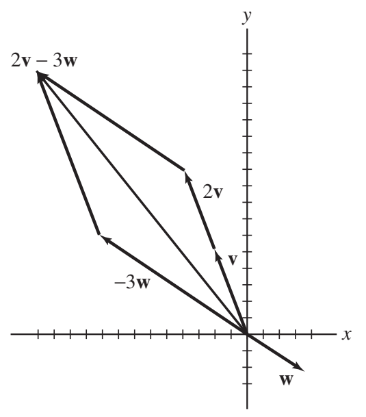
- 03Chapter 2 · Source exercise 3Find the unit vector in the direction of \(\mathbf{v}\).
Solution to exercise 3
The unit vector in the direction of \(\mathbf v\) is \[ \mathbf e_{\mathbf v}=\frac{1}{\lVert \mathbf v\rVert}\mathbf v \] We compute the length of \(\mathbf v\): \[ \lVert \mathbf v\rVert=\sqrt{(-2)^2+5^2}=\sqrt{29} \] Hence, \[ \mathbf e_{\mathbf v}=\frac{\mathbf v}{\lVert \mathbf v\rVert} =\frac{\langle -2,5\rangle}{\sqrt{29}} =\langle \frac{-2}{\sqrt{29}},\frac{5}{\sqrt{29}}\rangle \]
- 04Chapter 2 · Source exercise 4Find the length of \(\mathbf{v} + \mathbf{w}\).
Solution to exercise 4
We first compute the sum \(\mathbf v+\mathbf w\): \[ \mathbf v+\mathbf w=\langle -2,5\rangle+\langle 3,-2\rangle=\langle -2+3,5-2\rangle=\langle 1,3\rangle \] Using the definition of the length of a vector we obtain \[ \lVert \mathbf v+\mathbf w\rVert=\lVert\langle 1,3\rangle\rVert=\sqrt{1^2+3^2}=\sqrt{10}. \]
- 05Chapter 2 · Source exercise 5Express \(\mathbf{i}\) as a linear combination \(r\mathbf{v} + s\mathbf{w}\).
Solution to exercise 5
We use basic properties of vector algebra to write \[ \mathbf i=r\mathbf v+s\mathbf w \tag{1}\label{exam1-equation-1} \] \[ \langle 1,0\rangle=r\langle -2,5\rangle+s\langle 3,-2\rangle=\langle -2r+3s,5r-2s\rangle \] The vectors are equivalent, hence, \[ 1=-2r+3s \] \[ 0=5r-2s \] The second equation implies that \(s=\frac52 r\). We substitute in the first equation and solve for \(r\): \[ 1=-2r+3\cdot \frac52 r \] \[ 1=\frac{11}{2}r \] \[ r=\frac{2}{11} \quad \Rightarrow \quad s=\frac52\cdot \frac{2}{11}=\frac{5}{11} \] Substituting in (1) we obtain \[ \mathbf i=\frac{2}{11}\mathbf v+\frac{5}{11}\mathbf w. \]
- 06Chapter 2 · Source exercise 6Find a scalar \(\alpha\) such that \(\|\mathbf{v} + \alpha \mathbf{w}\| = 6\).
Solution to exercise 6
We compute the vector \(\mathbf v+\alpha\mathbf w\): \[ \mathbf v+\alpha\mathbf w=\langle -2,5\rangle+\alpha\langle 3,-2\rangle=\langle -2+3\alpha,5-2\alpha\rangle \] The length of \(\mathbf v+\alpha\mathbf w\) is \[ \lVert \mathbf v+\alpha\mathbf w\rVert =\sqrt{(-2+3\alpha)^2+(5-2\alpha)^2} =\sqrt{4-12\alpha+9\alpha^2+25-20\alpha+4\alpha^2} \] \[ =\sqrt{13\alpha^2-32\alpha+29} \] We obtain the following equation: \[ \sqrt{13\alpha^2-32\alpha+29}=6 \] Solving for \(\alpha\) yields \[ 13\alpha^2-32\alpha+29=36 \] \[ 13\alpha^2-32\alpha-7=0 \] \[ \alpha_{1,2}=\frac{32\pm \sqrt{32^2-4\cdot 13\cdot(-7)}}{26} =\frac{16\pm \sqrt{347}}{13} \] The two solutions are thus \[ \alpha=\frac{16\pm \sqrt{347}}{13}. \]
- 07Chapter 2 · Source exercise 7If \(P = (1, 4)\) and \(Q = (-3, 5)\), what are the components of \(\overrightarrow{PQ}\)? What is the length of \(\overrightarrow{PQ}\)?
Solution to exercise 7
By the Definition of components of a vector we have \[ \overrightarrow{PQ}=\langle -3-1,\ 5-4\rangle=\langle -4,1\rangle \] The length of \(\overrightarrow{PQ}\) is \[ \lVert \overrightarrow{PQ}\rVert=\sqrt{(-4)^2+1^2}=\sqrt{17}. \]
- 08Chapter 2 · Source exercise 8Let \(A = (2, -1), B = (1, 4), P = (2, 3)\). Find the point \(Q\) such that \(\overrightarrow{PQ}\) is equivalent to \(\overrightarrow{AB}\). Sketch \(\overrightarrow{PQ}\) and \(\overrightarrow{AB}\).
Solution to exercise 8
Equivalent vectors have the same components.
\[ \overrightarrow{AB}=\langle 1-2,4-(-1)\rangle=\langle-1,5\rangle. \]\[ Q=P+\overrightarrow{AB}=(2,3)+(-1,5)=(1,8). \]Sketch arrows from \(A=(2,-1)\) to \(B=(1,4)\) and from \(P=(2,3)\) to \(Q=(1,8)\); both move one unit left and five units up.
Source clarification. The supplied solution duplicated Exercise 7. This solution uses the points in Exercise 8.
- 09Chapter 2 · Source exercise 9Find the 2D vector with length 3 making an angle of \(\displaystyle \frac{7\pi}{4}\) with the positive \(x\)-axis.
Solution to exercise 9
We denote the vector by \(\mathbf v=\langle a,b\rangle\). \(\mathbf v\) makes an angle \(\theta=\frac{7\pi}{4}\) with the \(x\)-axis, and its length is \(3\), hence, \[ a=\lVert \mathbf v\rVert\cos\theta=3\cos\frac{7\pi}{4}=\frac{3}{\sqrt2} \] \[ b=\lVert \mathbf v\rVert\sin\theta=3\sin\frac{7\pi}{4}=-\frac{3}{\sqrt2} \] That is, \[ \mathbf v=\langle a,b\rangle=\langle \frac{3}{\sqrt2},-\frac{3}{\sqrt2}\rangle \]
- 10Chapter 2 · Source exercise 10Calculate \(3(\mathbf{i} - 2\mathbf{j}) - 6(\mathbf{i} + 6\mathbf{j})\).
Solution to exercise 10
Using basic properties of vector algebra we have \[ 3(\mathbf i-2\mathbf j)-6(\mathbf i+6\mathbf j) =3\mathbf i-6\mathbf j-6\mathbf i-36\mathbf j =-3\mathbf i-42\mathbf j \]
- 11Chapter 2 · Source exercise 11Find the value of \(\beta\) for which \(\mathbf{w} = \langle -2, \beta \rangle\) is parallel to \(\mathbf{v} = \langle 4, -3 \rangle\).
Solution to exercise 11
If \(\mathbf v=\langle 4,-3\rangle\) and \(\mathbf w=\langle -2,\beta\rangle\) are parallel, there exists a scalar \(\lambda\) such that \(\mathbf w=\lambda\mathbf v\). That is, \[ \langle -2,\beta\rangle=\lambda\langle 4,-3\rangle=\langle 4\lambda,-3\lambda\rangle \] yielding \[ -2=4\lambda \qquad \text{and} \qquad \beta=-3\lambda \] These equations imply that \(\lambda=-\frac12\) and \(\lambda=-\frac{\beta}{3}\). Equating the two expressions for \(\lambda\) gives \[ -\frac12=-\frac{\beta}{3} \quad \Rightarrow \quad \beta=\frac32 \]
- 12Chapter 2 · Source exercise 12Let \(P = (1, 4, -3)\).
- Find the point \(Q\) such that \(\overrightarrow{PQ}\) is equivalent to \(\langle 3, -1, 5 \rangle\).
- Find a unit vector \(\mathbf{e}\) parallel to \(\overrightarrow{PQ}\).
Solution to exercise 12
(a) Let \(Q=(a,b,c)\). Since the vectors \(\overrightarrow{PQ}\) and \(\langle 3,-1,5\rangle\) are equivalent they have the same components. Hence, \[ \overrightarrow{PQ}=\langle a-1,\ b-4,\ c-(-3)\rangle=\langle 3,-1,5\rangle \] \[ a-1=3,\quad b-4=-1,\quad c+3=5 \] \[ a=4,\quad b=3,\quad c=2 \] The point \(Q\) is thus \(Q=(4,3,2)\).
(b) The unit vector is obtained by dividing \(\overrightarrow{PQ}\) by its length: \[ \mathbf e=\frac{\overrightarrow{PQ}}{\lVert \overrightarrow{PQ}\rVert} =\frac{\langle 3,-1,5\rangle}{\sqrt{3^2+(-1)^2+5^2}} =\langle \tfrac{3}{\sqrt{35}},\ -\tfrac{1}{\sqrt{35}},\ \tfrac{5}{\sqrt{35}}\rangle \] Notice that the opposite vector \(-\mathbf e\) is also a solution.
- 13Chapter 2 · Source exercise 13Let \(\mathbf{w} = \langle 2, -2, 1 \rangle\) and \(\mathbf{v} = \langle 4, 5, -4 \rangle\). Solve for \(\mathbf{u}\) if \(\mathbf{v} + 5\mathbf{u} = 3\mathbf{w} - \mathbf{u}\).
Solution to exercise 13
Using vector algebra we have \[ \mathbf v+5\mathbf u=3\mathbf w-\mathbf u \] \[ 6\mathbf u=3\mathbf w-\mathbf v \] \[ \mathbf u=\tfrac12\mathbf w-\tfrac16\mathbf v =\tfrac12\langle 2,-2,1\rangle-\tfrac16\langle 4,5,-4\rangle =\langle 1,-1,\tfrac12\rangle-\langle \tfrac{4}{6},\tfrac{5}{6},-\tfrac{4}{6}\rangle \] \[ \mathbf u=\langle \tfrac13,\ -\tfrac{11}{6},\ \tfrac{7}{6}\rangle \]
- 14Chapter 2 · Source exercise 14Let \(\mathbf{v} = 3\mathbf{i} - \mathbf{j} + 4\mathbf{k}\). Find the length of \(\mathbf{v}\) and the vector \(2\mathbf{v} + 3(4\mathbf{i} - \mathbf{k})\).
Solution to exercise 14
We first compute the length of the vector \(\mathbf v\): \[ \lVert \mathbf v\rVert=\lVert 3\mathbf i-\mathbf j+4\mathbf k\rVert =\sqrt{3^2+(-1)^2+4^2}=\sqrt{26} \] We find the vector \(2\mathbf v+3(4\mathbf i-\mathbf k)\) using properties of vectors: \[ 2\mathbf v+3(4\mathbf i-\mathbf k) =2(3\mathbf i-\mathbf j+4\mathbf k)+3(4\mathbf i-\mathbf k) \] \[ =6\mathbf i-2\mathbf j+8\mathbf k+12\mathbf i-3\mathbf k =18\mathbf i-2\mathbf j+5\mathbf k \]
- 15Chapter 2 · Source exercise 15Find a parametrization \(\mathbf{r}_1(t)\) of the line passing through \((1, 4, 5)\) and \((-2, 3, -1)\). Then find a parametrization \(\mathbf{r}_2(t)\) of the line parallel to \(\mathbf{r}_1\) passing through \((1, 0, 0)\).
Solution to exercise 15
Since the points \(P=(-2,3,-1)\) and \(Q=(1,4,5)\) are on the line \(\ell_1\), the vector \(\overrightarrow{PQ}\) is a direction vector for the line. We find \[ \overrightarrow{PQ}=(1-(-2),4-3,5-(-1))=(3,1,6) \] Substituting \(\mathbf v=(3,1,6)\) and \(\mathbf P_0=(1,4,5)\) in the vector parametrization of the line we obtain: \[ \mathbf r_1(t)=\mathbf P_0+t\mathbf v =\langle 1,4,5\rangle+t\langle 3,1,6\rangle =\langle 1+3t,\ 4+t,\ 5+6t\rangle \] The line \(\ell_2\) is parallel to \(\ell_1\), hence \(\overrightarrow{PQ}=\langle 3,1,6\rangle\) is also a direction vector for \(\ell_2\). Substituting \(\mathbf v=\langle 3,1,6\rangle\) and \(\mathbf P_0=(1,0,0)\) in the vector parametrization of the line we obtain: \[ \mathbf r_2(t)=\langle 1,0,0\rangle+t\langle 3,1,6\rangle =\langle 1+3t,\ t,\ 6t\rangle \]
- 16Chapter 2 · Source exercise 16Let \(\mathbf{r}_1(t) = \mathbf{v}_1 + t \mathbf{w}_1\) and \(\mathbf{r}_2(t) = \mathbf{v}_2 + t \mathbf{w}_2\) be parametrizations of lines \(L_1\) and \(L_2\). For each statement (a)--(e), provide a proof if the statement is true and a counterexample if it is false.
- If \(L_1 = L_2\), then \(\mathbf{v}_1 = \mathbf{v}_2\) and \(\mathbf{w}_1 = \mathbf{w}_2\).
- If \(L_1 = L_2\) and \(\mathbf{v}_1 = \mathbf{v}_2\), then \(\mathbf{w}_1 = \mathbf{w}_2\).
- If \(L_1 = L_2\) and \(\mathbf{w}_1 = \mathbf{w}_2\), then \(\mathbf{v}_1 = \mathbf{v}_2\).
- If \(L_1\) and \(L_2\) have parallel direction vectors and \(\mathbf{v}_1 = \mathbf{v}_2\), then \(\mathbf{w}_1 = \mathbf{w}_2\).
- If \(L_1\) is parallel to \(L_2\), then \(\mathbf{w}_1 = \lambda \mathbf{w}_2\) for some scalar \(\lambda\).
Solution to exercise 16
Source clarification. In (d), take both base points to be \(\langle1,1,1\rangle\), with direction vectors \(\langle1,0,1\rangle\) and \(\langle2,0,2\rangle\). They describe the same line with unequal directions. This uses “parallel” to include coincident lines; if parallel lines must be distinct, (d) has an impossible premise and is vacuously true.
(a) This statement is false. Consider the following lines: \[ L_1:\ \mathbf r_1(t)=\langle 1,0,1\rangle+t\langle 1,1,1\rangle \] \[ L_2:\ \mathbf r_2(t)=\langle 3,2,3\rangle+t\langle 2,2,2\rangle \] The line \(L_1\) passes through the points \(P=(1,0,1)\) (for \(t=0\)) and \(Q=(2,1,2)\) (for \(t=1\)). The line \(L_2\) passes through \(P\) and \(Q\) at \(t=-1\) and \(t=-\frac12\), respectively. Therefore, \(L_1=L_2\). However: \[ \mathbf v_1=\langle 1,0,1\rangle,\ \mathbf v_2=\langle 3,2,3\rangle,\ \mathbf w_1=\langle 1,1,1\rangle,\ \mathbf w_2=\langle 2,2,2\rangle, \ \text{hence } \mathbf v_1\ne \mathbf v_2 \text{ and } \mathbf w_1\ne \mathbf w_2. \]
(b) This statement is false. Consider the following lines: \[ L_1:\ \mathbf r_1(t)=\langle 0,1,0\rangle+t\langle 1,1,1\rangle \] \[ L_2:\ \mathbf r_2(t)=\langle 0,1,0\rangle+t\langle 2,2,2\rangle \] The line \(L_1\) passes through the points \(P=(0,1,0)\) (for \(t=0\)) and \(Q=(1,2,1)\) (for \(t=1\)). The line \(L_2\) passes through \(P\) and \(Q\) as well (for \(t=0\) and \(t=\frac12\)). Therefore, \(L_1=L_2\). Also \(\mathbf v_1=\mathbf v_2\), but \(\mathbf w_1\ne \mathbf w_2\).
(c) This statement is false. Consider the following lines: \[ L_1:\ \mathbf r_1(t)=\langle 1,0,1\rangle+t\langle 1,1,1\rangle \] \[ L_2:\ \mathbf r_2(t)=\langle 2,1,2\rangle+t\langle 1,1,1\rangle \] The line \(L_1\) passes through \(P=(1,0,1)\) and \(Q=(2,1,2)\) (for \(t=0\) and \(t=1\)). The line \(L_2\) passes through \(P=(1,0,1)\) and \(Q=(2,1,2)\) (for \(t=-1\) and \(t=0\)). Therefore, \(L_1=L_2\). Also, \(\mathbf w_1=\mathbf w_2\) but \(\mathbf v_1\ne \mathbf v_2\).
(d) This statement is false. Consider the following lines: \[ L_1:\ \mathbf r_1(t)=\langle 1,1,1\rangle+t\langle 1,0,1\rangle \] \[ L_2:\ \mathbf r_2(t)=\langle 1,1,1\rangle+t\langle 2,0,2\rangle \] We have \(\mathbf w_1=\langle 1,0,1\rangle\) and \(\mathbf w_2=\langle 2,0,2\rangle\). We conclude that \(\mathbf w_1\) and \(\mathbf w_2\) are parallel although \(\mathbf w_1\ne \mathbf w_2\).
(e) This statement is correct. If \(L_1\) and \(L_2\) are parallel lines, the direction vectors \(\mathbf w_1\) and \(\mathbf w_2\) of these lines are parallel, hence they are scalar multiples of one another.
- 17Chapter 2 · Source exercise 17Find \(a\) and \(b\) such that the lines \(\mathbf{r}_1 = (1, 2, 1) + t(1, -1, 1)\) and \(\mathbf{r}_2 = (3, -1, 1) + t(a, b, -2)\) are parallel.
Solution to exercise 17
The lines are parallel if and only if the direction vectors \(\mathbf v_1=\langle 1,-1,1\rangle\) and \(\mathbf v_2=\langle a,b,-2\rangle\) are parallel. That is, if and only if there exists a scalar \(\lambda\) such that: \[ \mathbf v_2=\lambda \mathbf v_1 \] \[ \langle a,b,-2\rangle=\lambda\langle 1,-1,1\rangle=\langle \lambda,-\lambda,\lambda\rangle \] We obtain the following equations: \[ a=\lambda \qquad b=-\lambda \qquad -2=\lambda \] Thus, \[ a=-2,\qquad b=2. \]
- 18Chapter 2 · Source exercise 18Find \(a\) such that the lines \(\mathbf{r}_1 = (1, 2, 1) + t(1, -1, 1)\) and \(\mathbf{r}_2 = (3, -1, 1) + t(a, 4, -2)\) intersect.
Solution to exercise 18
If the lines intersect, there exists a point that lies on both lines. That is, there are unique values of \(t\) and \(s\) such that: \[ \langle 1,2,1\rangle+t\langle 1,-1,1\rangle=\langle 3,-1,1\rangle+s\langle a,4,-2\rangle \] or \[ \langle 1+t,\ 2-t,\ 1+t\rangle=\langle 3+as,\ -1+4s,\ 1-2s\rangle \] yielding the following equations: \[ 1+t=3+as \quad \Rightarrow \quad t=2+as \] \[ 2-t=-1+4s \quad \Rightarrow \quad t=3-4s \] \[ 1+t=1-2s \quad \Rightarrow \quad t=-2s \] Equating the expressions for \(t\) gives the following equations: \[ 2+as=-2s \quad \Rightarrow \quad (a+2)s=-2 \] \[ 3-4s=-2s \quad \Rightarrow \quad 2s=3 \quad \Rightarrow \quad s=\frac32 \] Substituting \(s=\frac32\) in the first equation we obtain: \[ (a+2)\cdot \frac32=-2 \quad \Rightarrow \quad a=-\frac{10}{3}. \]
- 19Chapter 2 · Source exercise 19Sketch the vector sum \(\mathbf v_1-\mathbf v_2+\mathbf v_3\) for the vectors in Figure 1(A).
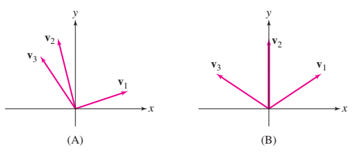
Figure 1 · Vector diagrams for Exercises 19–20. Solution to exercise 19
Source clarification. The folder’s Chapter 2 file uses \(\mathbf v_1-\mathbf v_2+\mathbf v_3\), matching this diagram. The earlier HTML instead asks for \(\mathbf v_1=\mathbf v_2+\mathbf v_3\). For that alternate question, place \(\mathbf v_3\) at the head of \(\mathbf v_2\), then draw the sum from the original tail to the final head.
Using the Parallelogram Law we obtain the vector sum shown in the figure:
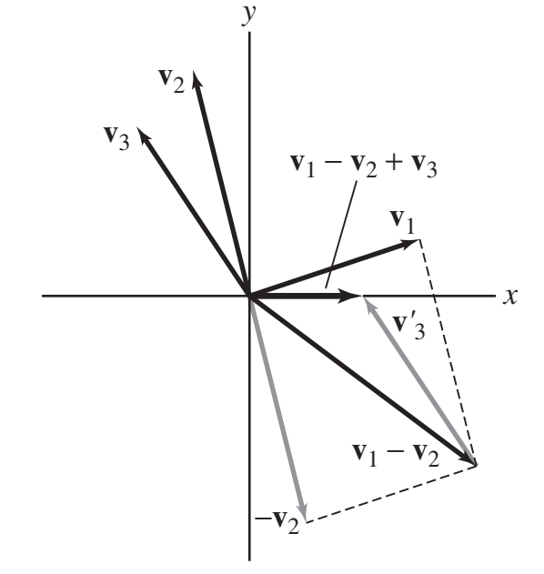
We first add \(\mathbf v_1\) and \(-\mathbf v_2\), then we add \(\mathbf v_3\) to \(\mathbf v_1-\mathbf v_2\).
- 20Chapter 2 · Source exercise 20Sketch the sums \(\mathbf{v}_1 + \mathbf{v}_2 + \mathbf{v}_3\), \(\mathbf{v}_1 + 2\mathbf{v}_2\), and \(\mathbf{v}_2 - \mathbf{v}_3\) for the vectors in Figure 1(B).
Solution to exercise 20
We use the definition of scalar multiple of a vector and the Parallelogram Law to sketch the vectors.
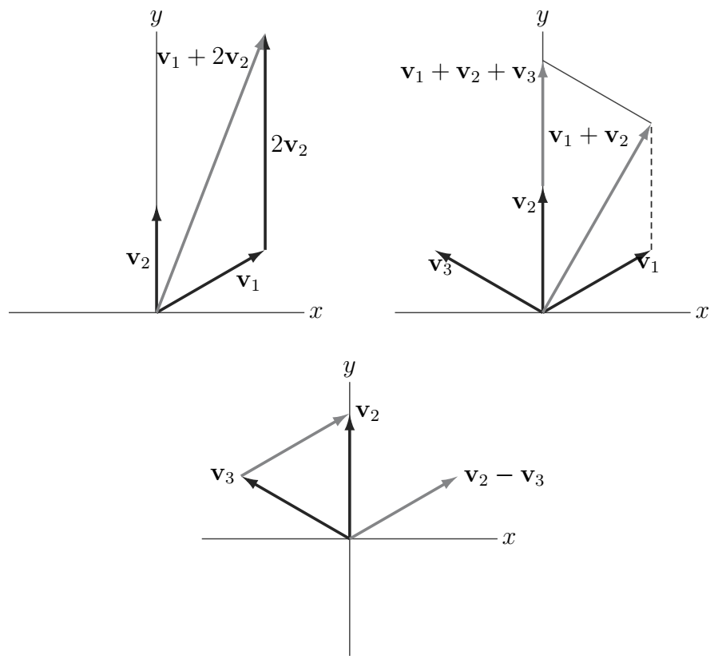
To form \(\mathbf v_2-\mathbf v_3\), we draw the vector pointing from \(\mathbf v_3\) to \(\mathbf v_2\) and translate it back to the basepoint.
Products, projections & forces
21–32For Exercises 21–26, let \(\mathbf v=(1,3,-2)\) and \(\mathbf w=(2,-1,4)\).
- 21Chapter 2 · Source exercise 21Compute \(\mathbf{v} + \mathbf{w}\).
Solution to exercise 21
Add corresponding components:
\[ \mathbf v+\mathbf w=\langle1+2,3-1,-2+4\rangle=\langle3,2,2\rangle. \]The supplied dot-product calculation below is useful for Exercise 22.
Using the definition of the dot product we have \[ \mathbf v\cdot \mathbf w =\langle 1,3,-2\rangle\cdot \langle 2,-1,4\rangle =1\cdot 2+3\cdot(-1)+(-2)\cdot 4 =2-3-8=-9 \]
- 22Chapter 2 · Source exercise 22Compute the angle between \(\mathbf{v}\) and \(\mathbf{w}\).
Solution to exercise 22
The cosine of the angle \(\theta\) between \(\mathbf v\) and \(\mathbf w\) is \[ \cos\theta=\frac{\mathbf v\cdot \mathbf w}{\lVert \mathbf v\rVert\lVert \mathbf w\rVert} \tag{1}\label{exam1-equation-2} \] We compute the lengths of the vectors: \[ \lVert \mathbf v\rVert=\lVert 1,3,-2\rVert=\sqrt{1^2+3^2+(-2)^2}=\sqrt{14} \] \[ \lVert \mathbf w\rVert=\lVert 2,-1,4\rVert=\sqrt{2^2+(-1)^2+4^2}=\sqrt{21} \] In the previous exercise we found that \(\mathbf v\cdot \mathbf w=-9\). Substituting these values in (1) gives \[ \cos\theta=\frac{-9}{\sqrt{14}\,\sqrt{21}}=\frac{-9}{7\sqrt6}\approx -0.5249 \] The solution for \(0\le \theta\le \pi\) is \[ \theta=2.123\ \text{rad}. \]
- 23Chapter 2 · Source exercise 23Compute \(\mathbf{v} \times \mathbf{w}\).
Solution to exercise 23
We use the definition of the cross product as a “determinant”: \[ \mathbf v\times \mathbf w= \begin{vmatrix} \mathbf i & \mathbf j & \mathbf k\\ 1 & 3 & -2\\ 2 & -1 & 4 \end{vmatrix} = \begin{vmatrix} 3 & -2\\ -1 & 4 \end{vmatrix}\mathbf i - \begin{vmatrix} 1 & -2\\ 2 & 4 \end{vmatrix}\mathbf j + \begin{vmatrix} 1 & 3\\ 2 & -1 \end{vmatrix}\mathbf k \] \[ =(12-2)\mathbf i-(4+4)\mathbf j+(-1-6)\mathbf k =10\mathbf i-8\mathbf j-7\mathbf k =\langle 10,-8,-7\rangle \]
- 24Chapter 2 · Source exercise 24Find the area of the parallelogram spanned by \(\mathbf{v}\) and \(\mathbf{w}\).
Solution to exercise 24
The parallelogram spanned by \(\mathbf v\) and \(\mathbf w\) has area \(\lVert \mathbf v\times \mathbf w\rVert\). In the previous exercise, we found that \(\mathbf v\times \mathbf w=\langle 10,-8,-7\rangle\). Therefore the area \(A\) of the parallelogram is \[ A=\lVert \mathbf v\times \mathbf w\rVert =\lVert 10,-8,-7\rVert =\sqrt{10^2+(-8)^2+(-7)^2} =\sqrt{213}\approx 14.59 \]
- 25Chapter 2 · Source exercise 25Find the volume of the parallelepiped spanned by \(\mathbf{v}, \mathbf{w}\), and \(\mathbf{u} = (1, 2, 6)\).
Solution to exercise 25
The volume \(V\) of the parallelepiped spanned by \(\mathbf v\), \(\mathbf w\) and \(\mathbf u\) is the following determinant: \[ V=\left|\det \begin{pmatrix} \mathbf v\\ \mathbf w\\ \mathbf u \end{pmatrix}\right| =\left| \begin{vmatrix} 1 & 3 & -2\\ 2 & -1 & 4\\ 1 & 2 & 6 \end{vmatrix} \right| = \left| 1\begin{vmatrix} -1 & 4\\ 2 & 6 \end{vmatrix} -3\begin{vmatrix} 2 & 4\\ 1 & 6 \end{vmatrix} -2\begin{vmatrix} 2 & -1\\ 1 & 2 \end{vmatrix} \right| \] \[ =\left|1(-6-8)-3(12-4)-2(4+1)\right| =\left|-14-24-10\right| =48 \]
- 26Chapter 2 · Source exercise 26Find all the vectors orthogonal to both \(\mathbf{v}\) and \(\mathbf{w}\).
Solution to exercise 26
A vector \(\mathbf u=\langle a,b,c\rangle\) is orthogonal to \(\mathbf v\) and to \(\mathbf w\) if the dot products \(\mathbf u\cdot \mathbf v\) and \(\mathbf u\cdot \mathbf w\) are zero. That is, \[ \mathbf u\cdot \mathbf v=0 \qquad \text{and} \qquad \mathbf u\cdot \mathbf w=0 \] We compute the dot products: \[ \mathbf u\cdot \mathbf v=\langle a,b,c\rangle\cdot \langle 1,3,-2\rangle=a+3b-2c \] \[ \mathbf u\cdot \mathbf w=\langle a,b,c\rangle\cdot \langle 2,-1,4\rangle=2a-b+4c \] We obtain the following equations: \[ a+3b-2c=0 \] \[ 2a-b+4c=0 \] The first equation implies \(a=2c-3b\). Substituting in the second equation and solving for \(b\) in terms of \(c\) gives \[ 2(2c-3b)-b+4c=0 \] \[ 4c-6b-b+4c=0 \] \[ 8c-7b=0 \quad \Rightarrow \quad b=\frac87 c \] We find \(a\) in terms of \(c\), using the relation \(a=2c-3b\): \[ a=2c-3\cdot \frac87 c=2c-\frac{24}{7}c=-\frac{10}{7}c \] The solutions are, thus, \[ \mathbf u=\langle a,b,c\rangle =\langle -\tfrac{10}{7}c,\ \tfrac{8}{7}c,\ c\rangle =c\langle -\tfrac{10}{7},\ \tfrac{8}{7},\ 1\rangle =\frac{c}{7}\langle -10,8,7\rangle \] We conclude that the vectors orthogonal to \(\mathbf v\) and \(\mathbf w\) are all the vectors parallel to \(\langle 10,-8,-7\rangle\).
- 27Chapter 2 · Source exercise 27Use vectors to prove that the line connecting the midpoints of two sides of a triangle is parallel to the third side.
Solution to exercise 27
Let \(E\) and \(F\) be the midpoints of sides \(AC\) and \(BC\) in a triangle \(ABC\) (see figure).
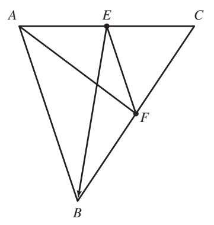
We must show that \[ \overrightarrow{EF}\parallel \overrightarrow{AB} \] Using the Parallelogram Law we have \[ \overrightarrow{EF}=\overrightarrow{EA}+\overrightarrow{AB}+\overrightarrow{BF} \tag{1}\label{exam1-equation-3} \] By the definition of the points \(E\) and \(F\), \[ \overrightarrow{EA}=\frac12\overrightarrow{CA}, \qquad \overrightarrow{BF}=\frac12\overrightarrow{BC} \] We substitute (1) to obtain \[ \overrightarrow{EF} =\frac12\overrightarrow{CA}+\overrightarrow{AB}+\frac12\overrightarrow{BC} =\overrightarrow{AB}+\frac12(\overrightarrow{CA}+\overrightarrow{BC}) \] \[ =\overrightarrow{AB}+\frac12(\overrightarrow{BC}+\overrightarrow{CA}) =\overrightarrow{AB}+\frac12\overrightarrow{BA} =\overrightarrow{AB}-\frac12\overrightarrow{AB} =\frac12\overrightarrow{AB} \] Therefore, \(\overrightarrow{EF}\) is a constant multiple of \(\overrightarrow{AB}\), which implies that \(\overrightarrow{EF}\) and \(\overrightarrow{AB}\) are parallel vectors.
For Exercise 28, let \(\mathbf v=(1,-1,3)\) and \(\mathbf w=(4,-2,1)\).
- 28Chapter 2 · Source exercise 28Find the decomposition \(\mathbf{v} = \mathbf{v}_{\parallel \mathbf{w}} + \mathbf{v}_{\perp \mathbf{w}}\) with respect to \(\mathbf{w}\).
Solution to exercise 28
(a) Step 1. Compute \(\mathbf v\cdot \mathbf w\) and \(\mathbf w\cdot \mathbf w\). We have the following dot products: \[ \mathbf v\cdot \mathbf w=\langle 1,-1,3\rangle\cdot \langle 4,-2,1\rangle=4+2+3=9 \] \[ \mathbf w\cdot \mathbf w=\langle 4,-2,1\rangle\cdot \langle 4,-2,1\rangle=16+4+1=21 \] Step 2. Use the formula for \(\mathbf v_{\parallel \mathbf w}\). We use the following formula: \[ \mathbf v_{\parallel \mathbf w}=\frac{\mathbf v\cdot \mathbf w}{\mathbf w\cdot \mathbf w}\,\mathbf w \] Substituting the dot products from the previous step, we get: \[ \mathbf v_{\parallel \mathbf w}=\frac{9}{21}\langle 4,-2,1\rangle =\langle \tfrac{12}{7},-\tfrac{6}{7},\tfrac{3}{7}\rangle \] Step 3. Identifying \(\mathbf v_{\perp \mathbf w}\). The orthogonal part is the following difference: \[ \mathbf v_{\perp \mathbf w}=\mathbf v-\mathbf v_{\parallel \mathbf w} =\langle 1,-1,3\rangle-\langle \tfrac{12}{7},-\tfrac{6}{7},\tfrac{3}{7}\rangle =\langle -\tfrac{5}{7},-\tfrac{1}{7},\tfrac{18}{7}\rangle \] The resulting decomposition is: \[ \mathbf v=\langle 1,-1,3\rangle =\langle \tfrac{12}{7},-\tfrac{6}{7},\tfrac{3}{7}\rangle +\langle -\tfrac{5}{7},-\tfrac{1}{7},\tfrac{18}{7}\rangle \] \[ \hspace{1in} \text{projection along }\mathbf w + \text{orthogonal to }\mathbf w \]
(b) Step 1. Compute \(\mathbf w\cdot \mathbf v\) and \(\mathbf v\cdot \mathbf v\). In part (a) we have \(\mathbf w\cdot \mathbf v=\mathbf v\cdot \mathbf w=9\). We compute the dot product \(\mathbf v\cdot \mathbf v\): \[ \mathbf v\cdot \mathbf v=\langle 1,-1,3\rangle\cdot \langle 1,-1,3\rangle=1+1+9=11 \] Step 2. Use the formula for \(\mathbf w_{\parallel \mathbf v}\). We use the following formula: \[ \mathbf w_{\parallel \mathbf v}=\frac{\mathbf w\cdot \mathbf v}{\mathbf v\cdot \mathbf v}\,\mathbf v \] Substituting the dot products from the previous step, we get: \[ \mathbf w_{\parallel \mathbf v}=\frac{9}{11}\langle 1,-1,3\rangle =\langle \tfrac{9}{11},-\tfrac{9}{11},\tfrac{27}{11}\rangle \] Step 3. Identifying \(\mathbf w_{\perp \mathbf v}\). The orthogonal part is the following difference: \[ \mathbf w_{\perp \mathbf v}=\mathbf w-\mathbf w_{\parallel \mathbf v} =\langle 4,-2,1\rangle-\langle \tfrac{9}{11},-\tfrac{9}{11},\tfrac{27}{11}\rangle =\langle \tfrac{35}{11},-\tfrac{13}{11},-\tfrac{16}{11}\rangle \] We obtain the following decomposition: \[ \mathbf w=\langle 4,-2,1\rangle =\langle \tfrac{9}{11},-\tfrac{9}{11},\tfrac{27}{11}\rangle +\langle \tfrac{35}{11},-\tfrac{13}{11},-\tfrac{16}{11}\rangle \] \[ \hspace{1in} \text{projection along }\mathbf v + \text{orthogonal to }\mathbf v \]
- 29Chapter 2 · Source exercise 29Calculate the scalar component of \(\mathbf{v} = \left\langle -2, \frac{1}{2}, 3 \right\rangle\) along \(\mathbf{w} = \left\langle 1, 2, 2 \right\rangle\).
Solution to exercise 29
We first compute the following dot products: \[ \mathbf v\cdot \mathbf w=\langle -2,\tfrac12,3\rangle\cdot \langle 1,2,2\rangle=5 \] \[ \mathbf w\cdot \mathbf w=\lVert \mathbf w\rVert^2=1^2+2^2+2^2=9 \] The component of \(\mathbf v\) along \(\mathbf w\) is the following number: \[ \left\lVert \frac{\mathbf v\cdot \mathbf w}{\mathbf w\cdot \mathbf w}\,\mathbf w\right\rVert =\frac{5}{9}\lVert \mathbf w\rVert =\frac{5}{9}\cdot 3=\frac{5}{3} \]
- 30Chapter 2 · Source exercise 30Calculate the magnitude of the forces on the two ropes in Figure 2.
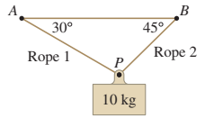
Figure 2 · Suspended load, Exercise 30. Solution to exercise 30
Gravity exerts a force \(\mathbf F_g\) of magnitude \(10g=98\) newtons. Since the sum of \(\mathbf F_1\) and \(\mathbf F_2\) balance the force of gravity, we have \[ \mathbf F_1+\mathbf F_2+\mathbf F_g=\mathbf 0 \tag{1}\label{exam1-equation-4} \] We resolve \(\mathbf F_1\), \(\mathbf F_2\), and \(\mathbf F_g\) into a sum of a force along the ground and a force orthogonal to the ground.
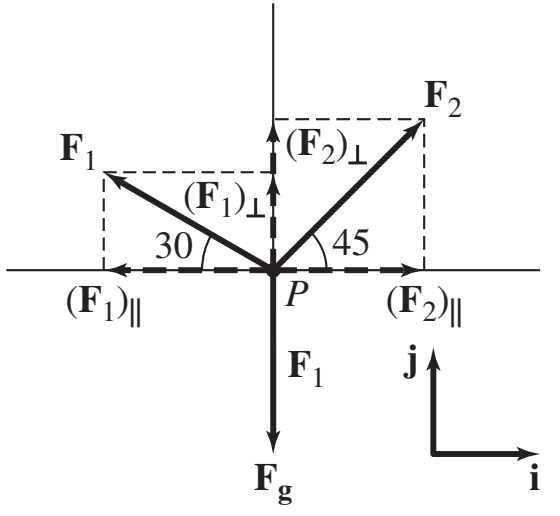
This gives \[ (\mathbf F_1)_i=-(\lVert \mathbf F_1\rVert\cos 30^\circ)\mathbf i, \qquad (\mathbf F_1)_j=(\lVert \mathbf F_1\rVert\cos 60^\circ)\mathbf j \] \[ (\mathbf F_2)_i=(\lVert \mathbf F_2\rVert\cos 45^\circ)\mathbf i, \qquad (\mathbf F_2)_j=(\lVert \mathbf F_2\rVert\cos 45^\circ)\mathbf j \] \[ (\mathbf F_g)_i=0, \qquad (\mathbf F_g)_j=-10g\,\mathbf j=-98\mathbf j \] Substituting these forces in (1) gives \[ \left(-\frac{\lVert \mathbf F_1\rVert\sqrt3}{2}+\frac{\lVert \mathbf F_2\rVert}{\sqrt2}\right)\mathbf i +\left(\frac{\lVert \mathbf F_1\rVert}{2}+\frac{\lVert \mathbf F_2\rVert\sqrt2}{2}-98\right)\mathbf j=\mathbf 0 \] \[ \frac12\left(\sqrt2\lVert \mathbf F_2\rVert-\sqrt3\lVert \mathbf F_1\rVert\right)\mathbf i +\frac12\left(\lVert \mathbf F_1\rVert+\sqrt2\lVert \mathbf F_2\rVert-98\right)\mathbf j=\mathbf 0 \] We now equate each component to zero, to obtain \[ \frac{\sqrt2\lVert \mathbf F_2\rVert-\sqrt3\lVert \mathbf F_1\rVert}{2}=0 \quad \Rightarrow \quad \lVert \mathbf F_1\rVert\approx 71.7 \] \[ \frac{\lVert \mathbf F_1\rVert+\sqrt2\lVert \mathbf F_2\rVert}{2}-98=0 \quad \Rightarrow \quad \lVert \mathbf F_2\rVert\approx 87.8 \] We conclude that \[ \mathbf F_1=-(71.7\cos 30^\circ)\mathbf i+(71.7\cos 60^\circ)\mathbf j=-62.1\mathbf i+35.9\mathbf j \] \[ \mathbf F_2=(87.8\cos 45^\circ)\mathbf i+(87.8\cos 45^\circ)\mathbf j=62.1\mathbf i+62.1\mathbf j \] (As in the statement of the problems, all units are in Newtons.)
- 31Chapter 2 · Source exercise 31A 50-kg wagon is pulled to the right by a force \(\mathbf{F}_1\) making an angle of \(30^\circ\) with the ground. At the same time, the wagon is pulled to the left by a horizontal force \(\mathbf{F}_2\).
- Find the magnitude of \(\mathbf{F}_1\) in terms of the magnitude of \(\mathbf{F}_2\) if the wagon does not move.
- What is the maximal magnitude of \(\mathbf{F}_1\) that can be applied to the wagon without lifting it?
Solution to exercise 31
Assume the horizontal forces balance without friction. At the lifting threshold, the ground’s normal force becomes zero.
(a) By Newton's Law, at equilibrium, the total force acting on the wagon is zero.
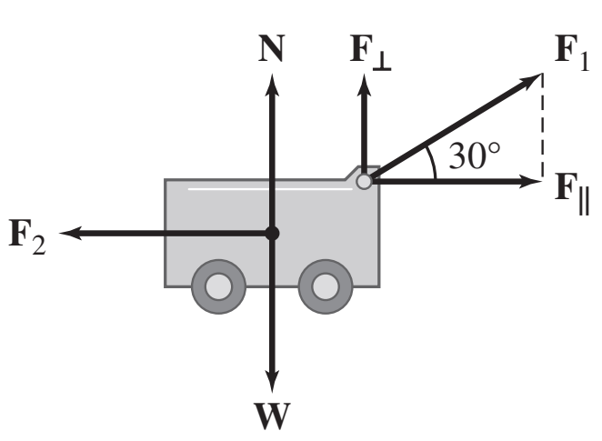
We resolve the force \(\mathbf F_1\) into its components: \[ \mathbf F_1=\mathbf F_{1\parallel}+\mathbf F_{1\perp} \] where \(\mathbf F_{1\parallel}\) is the horizontal component and \(\mathbf F_{1\perp}\) is the vertical component. Since the wagon does not move, the magnitude of \(\mathbf F_{1\parallel}\) must be equal to the magnitude of \(\mathbf F_2\). That is, \[ \lVert \mathbf F_{1\parallel}\rVert=\lVert \mathbf F_1\rVert\cos 30^\circ=\lVert \mathbf F_2\rVert \] The above equation gives: \[ \lVert \mathbf F_1\rVert\frac{\sqrt3}{2}=\lVert \mathbf F_2\rVert \quad \Rightarrow \quad \lVert \mathbf F_1\rVert=\frac{2\lVert \mathbf F_2\rVert}{\sqrt3} \]
(b) The maximum magnitude of force \(\mathbf F_1\) that can be applied to the wagon without lifting the wagon is found by comparing the vertical forces: \[ \lVert \mathbf F_1\rVert\sin 30^\circ = 9.8\cdot 50 \] \[ \lVert \mathbf F_1\rVert\frac12 = 9.8\cdot 50 \quad \Rightarrow \quad \lVert \mathbf F_1\rVert = 9.8\cdot 100 = 980\ \text{N} \]
- 32Chapter 2 · Source exercise 32Let \(\mathbf v,\mathbf w,\mathbf u\) be vectors in \(\mathbb R^3\). Which of the following is a scalar?
- \(\mathbf v\times(\mathbf u+\mathbf w)\)
- \((\mathbf u+\mathbf w)\cdot(\mathbf v\times\mathbf w)\)
- \((\mathbf u\times\mathbf w)+(\mathbf w-\mathbf v)\)
Solution to exercise 32
Source clarification. The Chapter 2 file supplies these expressions. In the earlier HTML, (b) uses an undeclared \(\mathbf x\), and (c) is \((\mathbf u\cdot\mathbf w)\times(\mathbf w-\mathbf v)\), which is undefined: a cross product requires two vectors.
(a) The cross product of the two vectors \(\mathbf v\) and \(\mathbf u+\mathbf w\) is a vector.
(b) The dot product of the two vectors \(\mathbf u+\mathbf w\) and \(\mathbf v\times \mathbf w\) is a scalar.
(c) The cross product \(\mathbf u\times \mathbf w\) is a vector, therefore the sum of this vector and the vector \(\mathbf w-\mathbf v\) is again a vector.
Cross products & vector identities
33–45For Exercises 33–36, let \(\mathbf v=\langle1,2,4\rangle\), \(\mathbf u=\langle6,-1,2\rangle\), and \(\mathbf w=\langle1,0,-3\rangle\). Calculate the given quantity.
- 33Chapter 2 · Source exercise 33\(\mathbf{v} \times \mathbf{w}\)
Solution to exercise 33
We use the definition of the cross product as a determinant to compute \(\mathbf v\times \mathbf w\): \[ \mathbf v\times \mathbf w= \begin{vmatrix} \mathbf i & \mathbf j & \mathbf k\\ 1 & 2 & 4\\ 1 & 0 & -3 \end{vmatrix} =-(6-0)\mathbf i-(-3-4)\mathbf j+(0-2)\mathbf k =-6\mathbf i+7\mathbf j-2\mathbf k =\langle -6,7,-2\rangle \]
- 34Chapter 2 · Source exercise 34\(\mathbf{w} \times \mathbf{u}\)
Solution to exercise 34
We compute the cross product as the following determinant: \[ \mathbf w\times \mathbf u= \begin{vmatrix} \mathbf i & \mathbf j & \mathbf k\\ 1 & 0 & -3\\ 6 & -1 & 2 \end{vmatrix} = \begin{vmatrix} 0 & -3\\ -1 & 2 \end{vmatrix}\mathbf i - \begin{vmatrix} 1 & -3\\ 6 & 2 \end{vmatrix}\mathbf j + \begin{vmatrix} 1 & 0\\ 6 & -1 \end{vmatrix}\mathbf k \] \[ =(0-3)\mathbf i-(2-(-18))\mathbf j+(-1-0)\mathbf k =-3\mathbf i-20\mathbf j-\mathbf k =\langle -3,-20,-1\rangle \]
- 35Chapter 2 · Source exercise 35\(\displaystyle \det\begin{pmatrix} \mathbf{u} \\ \mathbf{v} \\ \mathbf{w} \end{pmatrix}\)
Solution to exercise 35
We compute the determinant: \[ \det\begin{pmatrix}\mathbf u\\ \mathbf v\\ \mathbf w\end{pmatrix} = \begin{vmatrix} 6 & -1 & 2\\ 1 & 2 & 4\\ 1 & 0 & -3 \end{vmatrix} =6\begin{vmatrix} 2 & 4\\ 0 & -3 \end{vmatrix} +1\begin{vmatrix} 1 & 4\\ 1 & -3 \end{vmatrix} +2\begin{vmatrix} 1 & 2\\ 1 & 0 \end{vmatrix} \] \[ =6(-6-0)+1(-3-4)+2(0-2)=-47 \]
- 36Chapter 2 · Source exercise 36\(\mathbf{v} \cdot \left( \mathbf{u} \times \mathbf{w} \right)\)
Solution to exercise 36
We use the anticommutativity of the cross product and the cross product computed in a previous exercise to write: \[ \mathbf u\times \mathbf w=-\mathbf w\times \mathbf u=-\langle -3,-20,-1\rangle=\langle 3,20,1\rangle \] We now compute the dot product: \[ \mathbf v\cdot(\mathbf u\times \mathbf w)=\langle 1,2,4\rangle\cdot \langle 3,20,1\rangle =1\cdot 3+2\cdot 20+4\cdot 1=47 \]
- 37Chapter 2 · Source exercise 37Use the cross product to find the area of the triangle whose vertices are (1, 3, -1), (2, -1, 3), and (4, 1, 1).
Solution to exercise 37
Let \(A=(1,3,-1)\), \(B=(2,-1,3)\), and \(C=(4,1,1)\).
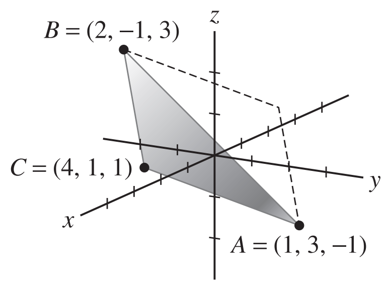
The area \(S\) of the triangle \(ABC\) is half area of the parallelogram spanned by \(\overrightarrow{AB}\) and \(\overrightarrow{AC}\). Using the Formula for the Area of the Parallelogram, we conclude that the area of the triangle is: \[ S=\frac12\lVert \overrightarrow{AB}\times \overrightarrow{AC}\rVert \tag{1}\label{exam1-equation-5} \] We first compute the vectors \(\overrightarrow{AB}\) and \(\overrightarrow{AC}\): \[ \overrightarrow{AB}=(2-1,-1-3,3-(-1))=(1,-4,4) \] \[ \overrightarrow{AC}=(4-1,1-3,1-(-1))=(3,-2,2) \] We compute the cross product of the two vectors: \[ \overrightarrow{AB}\times \overrightarrow{AC}= \begin{vmatrix} \mathbf i & \mathbf j & \mathbf k\\ 1 & -4 & 4\\ 3 & -2 & 2 \end{vmatrix} =((-8)-(-8))\mathbf i-(2-12)\mathbf j+(-2-(-12))\mathbf k \] \[ =10\mathbf j+10\mathbf k=\langle 0,10,10\rangle=10\langle 0,1,1\rangle \] The length of \(\overrightarrow{AB}\times \overrightarrow{AC}\) is, thus: \[ \lVert \overrightarrow{AB}\times \overrightarrow{AC}\rVert =\lVert 10\langle 0,1,1\rangle\rVert =10\lVert 0,1,1\rVert =10\sqrt{0^2+1^2+1^2} =10\sqrt2 \] Substituting in (1) gives the following area: \[ S=\frac12\cdot 10\sqrt2=5\sqrt2. \]
- 38Chapter 2 · Source exercise 38Calculate \(\|\mathbf{v} \times \mathbf{w}\|\) if \(\|\mathbf{v}\| = 2\), \(\mathbf{v} \cdot \mathbf{w} = 3\), and the angle between \(\mathbf{v}\) and \(\mathbf{w}\) is \(\frac{\pi}{6}\).
Solution to exercise 38
Using the definition of the cross product we have: \[ \lVert \mathbf v\times \mathbf w\rVert=\lVert \mathbf v\rVert\lVert \mathbf w\rVert\sin\theta. \] We substitute the given information, obtaining: \[ \lVert \mathbf v\times \mathbf w\rVert=2\lVert \mathbf w\rVert\sin\frac{\pi}{6} =2\lVert \mathbf w\rVert\cdot \frac12=\lVert \mathbf w\rVert \tag{1}\label{exam1-equation-6} \] We now must find the length of \(\mathbf w\). By the Formula for the Cosine of the Angle between Two Vectors we have: \[ \cos\theta=\frac{\mathbf v\cdot \mathbf w}{\lVert \mathbf v\rVert\lVert \mathbf w\rVert} \] Substituting the known values and solving for \(\lVert \mathbf w\rVert\) gives: \[ \cos\frac{\pi}{6}=\frac{3}{2\lVert \mathbf w\rVert} \quad \Rightarrow \quad \lVert \mathbf w\rVert=\frac{3}{2\cos\frac{\pi}{6}} =\frac{3}{2\cdot \frac{\sqrt3}{2}} =\sqrt3 \tag{2}\label{exam1-equation-7} \] Combining (1) and (2) gives the following length: \[ \lVert \mathbf v\times \mathbf w\rVert=\lVert \mathbf w\rVert=\sqrt3. \]
- 39Chapter 2 · Source exercise 39Show that if the vectors \(\mathbf{v}\), \(\mathbf{w}\) are orthogonal, then \(\|\mathbf{v} + \mathbf{w}\|^2 = \|\mathbf{v}\|^2 + \|\mathbf{w}\|^2\).
Solution to exercise 39
The vectors \(\mathbf v\) and \(\mathbf w\) are orthogonal, hence: \[ \mathbf v\cdot \mathbf w=0 \tag{1}\label{exam1-equation-8} \] Using the relation of the dot product with length and properties of the dot product we obtain: \[ \lVert \mathbf v+\mathbf w\rVert^2=(\mathbf v+\mathbf w)\cdot(\mathbf v+\mathbf w) =\mathbf v\cdot \mathbf v+\mathbf v\cdot \mathbf w+\mathbf w\cdot \mathbf v+\mathbf w\cdot \mathbf w =\lVert \mathbf v\rVert^2+2\mathbf v\cdot \mathbf w+\lVert \mathbf w\rVert^2 \tag{2}\label{exam1-equation-9} \] Combining (1) and (2) we get: \[ \lVert \mathbf v+\mathbf w\rVert^2=\lVert \mathbf v\rVert^2+\lVert \mathbf w\rVert^2. \]
- 40Chapter 2 · Source exercise 40Find the angle between the nonzero vectors \(\mathbf{v}\) and \(\mathbf{w}\) if \(\|\mathbf{v} + \mathbf{w}\| = \|\mathbf{v}\| = \|\mathbf{w}\|\).
Solution to exercise 40
Assume both vectors are nonzero so that their angle is defined. If both are zero, the stated equality holds but there is no defined angle.
The cosine of the angle \(\theta\) between \(\mathbf v\) and \(\mathbf w\) is given by: \[ \cos\theta=\frac{\mathbf v\cdot \mathbf w}{\lVert \mathbf v\rVert\lVert \mathbf w\rVert} \tag{1}\label{exam1-equation-10} \] We denote by \(r\) the value \(\lVert \mathbf v+\mathbf w\rVert=\lVert \mathbf v\rVert=\lVert \mathbf w\rVert=r\). To find \(\mathbf v\cdot \mathbf w\) in terms of \(r\), we evaluate \(\lVert \mathbf v+\mathbf w\rVert\). \[ \lVert \mathbf v+\mathbf w\rVert^2=(\mathbf v+\mathbf w)\cdot(\mathbf v+\mathbf w) =\mathbf v\cdot(\mathbf v+\mathbf w)+\mathbf w\cdot(\mathbf v+\mathbf w) \] \[ =\mathbf v\cdot \mathbf v+\mathbf v\cdot \mathbf w+\mathbf w\cdot \mathbf v+\mathbf w\cdot \mathbf w =\lVert \mathbf v\rVert^2+2\mathbf v\cdot \mathbf w+\lVert \mathbf w\rVert^2 \] That is, \[ r^2=r^2+2\mathbf v\cdot \mathbf w+r^2 \] \[ -r^2=2\mathbf v\cdot \mathbf w \quad \Rightarrow \quad \mathbf v\cdot \mathbf w=-\frac{r^2}{2} \] We now substitute \(\lVert \mathbf v\rVert=\lVert \mathbf w\rVert=r\) and \(\mathbf v\cdot \mathbf w=-\frac{r^2}{2}\) in (1) to obtain: \[ \cos\theta=\frac{-r^2/2}{r\cdot r}=-\frac12 \] The solution for \(0\le \theta\le \pi\) is \(\theta=\frac{2\pi}{3}\). That is, the angle between \(\mathbf v\) and \(\mathbf w\) is \(\frac{2\pi}{3}\) rad.
- 41Chapter 2 · Source exercise 41Find \(\|\mathbf{e} - 4\mathbf{f}\|\), assuming that \(\mathbf{e}\) and \(\mathbf{f}\) are unit vectors such that \(\|\mathbf{e} + \mathbf{f}\| = \sqrt{3}\).
Solution to exercise 41
We use the relation of the dot product with length and properties of the dot product to write \[ 3=\lVert \mathbf e+\mathbf f\rVert^2=(\mathbf e+\mathbf f)\cdot(\mathbf e+\mathbf f) =\mathbf e\cdot \mathbf e+\mathbf e\cdot \mathbf f+\mathbf f\cdot \mathbf e+\mathbf f\cdot \mathbf f \] \[ =\lVert \mathbf e\rVert^2+2\mathbf e\cdot \mathbf f+\lVert \mathbf f\rVert^2 =1^2+2\mathbf e\cdot \mathbf f+1^2=2+2\mathbf e\cdot \mathbf f \] We now find \(\mathbf e\cdot \mathbf f\): \[ 3=2+2\mathbf e\cdot \mathbf f \quad \Rightarrow \quad \mathbf e\cdot \mathbf f=\frac12 \] Hence, using the same method as above, we have: \[ \lVert \mathbf e-4\mathbf f\rVert^2=(\mathbf e-4\mathbf f)\cdot(\mathbf e-4\mathbf f) =\mathbf e\cdot \mathbf e-8\mathbf e\cdot \mathbf f+16\mathbf f\cdot \mathbf f \] \[ =1^2-8\cdot \frac12+4^2=17-4=13 \] Taking square roots, we get: \[ \lVert \mathbf e-4\mathbf f\rVert=\sqrt{13} \]
- 42Chapter 2 · Source exercise 42Find the area of the parallelogram spanned by vectors \(\mathbf{v}\) and \(\mathbf{w}\) such that \(\|\mathbf{v}\| = \|\mathbf{w}\| = 2\) and \(\mathbf{v} \cdot \mathbf{w} = 1\).
Solution to exercise 42
The area of the parallelogram spanned by vectors \(\mathbf v\) and \(\mathbf w\) is \(\lVert \mathbf v\times \mathbf w\rVert\) which equals \(\lVert \mathbf v\rVert\lVert \mathbf w\rVert\sin\theta\), for \(\theta\) the angle between the two vectors. Since \[ \mathbf v\cdot \mathbf w=\lVert \mathbf v\rVert\lVert \mathbf w\rVert\cos\theta=2\cdot 2\cdot \cos\theta=1, \] then \(\cos\theta=\frac14\) and \[ \sin\theta=\sqrt{1-\cos^2\theta}=\sqrt{1-\frac{1}{16}}=\frac{\sqrt{15}}{4}, \] thus, the area is \[ \lVert \mathbf v\rVert\lVert \mathbf w\rVert\sin\theta =2\cdot 2\cdot \frac{\sqrt{15}}{4} =\sqrt{15}. \]
- 43Chapter 2 · Source exercise 43Show that the equation \(\langle1,2,3\rangle\times\mathbf v=\langle-1,2,a\rangle\) has no solution for \(a\ne-1\).
Solution to exercise 43
Source clarification. The Chapter 2 file has \(\langle-1,2,a\rangle\) on the right. The earlier HTML has \(\langle1,2,a\rangle\); that variant requires \(1+4+3a=0\), so the necessary value is \(a=-5/3\), rather than \(-1\).
By properties of the cross product, the vector \(\langle -1,2,a\rangle\) is orthogonal to \(\langle 1,2,3\rangle\), hence the dot product of these vectors is zero. That is: \[ \langle -1,2,a\rangle\cdot \langle 1,2,3\rangle=0 \] We compute the dot product and solve for \(a\): \[ -1+4+3a=0 \] \[ 3a=-3 \quad \Rightarrow \quad a=-1 \] We conclude that if the given equation is solvable, then \(a=-1\).
- 44Chapter 2 · Source exercise 44Prove with a diagram the following: If \(\mathbf{e}\) is a unit vector orthogonal to \(\mathbf{v}\), then \(\mathbf{e} \times (\mathbf{v} \times \mathbf{e}) = (\mathbf{e} \times \mathbf{v}) \times \mathbf{e} = \mathbf{v}\).
Solution to exercise 44
Algebraically, use the vector triple-product identity and \(\mathbf e\cdot\mathbf e=1,\ \mathbf e\cdot\mathbf v=0\):
\[ \mathbf e\times(\mathbf v\times\mathbf e)=(\mathbf e\cdot\mathbf e)\mathbf v-(\mathbf e\cdot\mathbf v)\mathbf e=\mathbf v. \]\[ (\mathbf e\times\mathbf v)\times\mathbf e=\mathbf v(\mathbf e\cdot\mathbf e)-\mathbf e(\mathbf v\cdot\mathbf e)=\mathbf v. \]The vectors \(\mathbf w=\mathbf v\times \mathbf e\) and \(\mathbf e\times \mathbf w\) are determined by the right-hand rule, as shown in the figure:
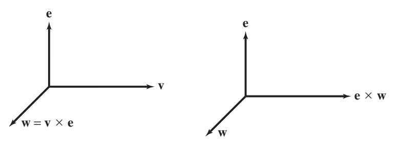
Similarly for the vectors \(\mathbf w_1=\mathbf e\times \mathbf v\) and \(\mathbf w_1\times \mathbf e\):
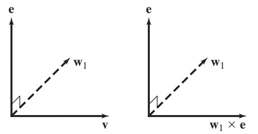
In each case, we see that the resulting vector is the vector \(\mathbf v\).
- 45Chapter 2 · Source exercise 45Use the identity \[ \mathbf{u} \times (\mathbf{v} \times \mathbf{w}) = (\mathbf{u} \cdot \mathbf{w}) \mathbf{v} - (\mathbf{u} \cdot \mathbf{v}) \mathbf{w} \] to prove that \[ \mathbf{u} \times (\mathbf{v} \times \mathbf{w}) + \mathbf{v} \times (\mathbf{w} \times \mathbf{u}) + \mathbf{w} \times (\mathbf{u} \times \mathbf{v}) = 0. \]
Solution to exercise 45
The given identity implies that: \[ \mathbf u\times(\mathbf v\times \mathbf w)=(\mathbf u\cdot \mathbf w)\mathbf v-(\mathbf u\cdot \mathbf v)\mathbf w \] \[ \mathbf v\times(\mathbf w\times \mathbf u)=(\mathbf v\cdot \mathbf u)\mathbf w-(\mathbf v\cdot \mathbf w)\mathbf u \] \[ \mathbf w\times(\mathbf u\times \mathbf v)=(\mathbf w\cdot \mathbf v)\mathbf u-(\mathbf w\cdot \mathbf u)\mathbf v \] Adding the three equations and using the commutativity of the dot product we find that: \[ \mathbf u\times(\mathbf v\times \mathbf w)+\mathbf v\times(\mathbf w\times \mathbf u)+\mathbf w\times(\mathbf u\times \mathbf v) \] \[ =(\mathbf u\cdot \mathbf w-\mathbf w\cdot \mathbf u)\mathbf v+(\mathbf v\cdot \mathbf u-\mathbf u\cdot \mathbf v)\mathbf w+(\mathbf w\cdot \mathbf v-\mathbf v\cdot \mathbf w)\mathbf u=\mathbf 0. \]
Planes & intersections
46–52- 46Chapter 2 · Source exercise 46Find an equation of the plane through \((1, -3, 5)\) with normal vector \(\mathbf{n} = \langle 2, 1, -4 \rangle\).
Solution to exercise 46
Using the scalar form of a plane we have \[ 2x+y-4z=d=\langle 2,1,-4\rangle\cdot \langle 1,-3,5\rangle \] We compute the dot product: \[ d=\langle 2,1,-4\rangle\cdot \langle 1,-3,5\rangle=2-3-20=-21 \] Therefore, the equation of the plane is, \[ 2x+y-4z=-21. \]
- 47Chapter 2 · Source exercise 47Write the equation of the plane \(\mathcal{P}\) with vector equation \[ \langle 1, 4, -3 \rangle \cdot \langle x, y, z \rangle = 7 \] in the form \[ a(x - x_0) + b(y - y_0) + c(z - z_0) = 0. \] Hint: You must find a point \(P = (x_0, y_0, z_0)\) on \(\mathcal{P}\).
Solution to exercise 47
We identify the vector \(\mathbf n=\langle a,b,c\rangle=\langle 1,4,-3\rangle\) that is normal to the plane, hence we may choose, \[ a=1,\quad b=4,\quad c=-3. \] We now must find a point in the plane. The point \((x_0,y_0,z_0)=(0,1,-1)\), for instance, satisfies the equation of the plane, therefore the equation may be written in the form: \[ 1(x-0)+4(y-1)-3(z-(-1))=0 \] or \[ (x-0)+4(y-1)-3(z+1)=0. \]
- 48Chapter 2 · Source exercise 48Find all the planes parallel to the plane passing through the points \((1, 2, 3)\), \((1, 2, 7)\), and \((1, 1, -3)\).
Solution to exercise 48
If coincident planes count as parallel, include \(d=1\) as well; under the distinct-plane convention, use \(d\ne1\).
Since the points \(A=(1,2,3)\), \(B=(1,2,7)\), \(C=(1,1,-3)\) lie in the plane, the vectors \(\overrightarrow{AB}\) and \(\overrightarrow{AC}\) are in the plane. We find these vectors: \[ \overrightarrow{AB}=\langle 1-1,\ 2-2,\ 7-3\rangle=\langle 0,0,4\rangle \] \[ \overrightarrow{AC}=\langle 1-1,\ 1-2,\ -3-3\rangle=\langle 0,-1,-6\rangle \] The cross product \(\mathbf n=\overrightarrow{AB}\times \overrightarrow{AC}\) is normal to the plane, therefore it is also normal to all the planes that are parallel to this plane. We could find this cross product, but let's try a slightly more clever approach. Note that the points \(A\), \(B\), \(C\) all satisfy \(x=1\). Thus, the vector \(\mathbf n=\langle 1,0,0\rangle\) is normal to this plane; the planes parallel to \(x=1\) are the planes \(x=d\) for \(d\ne 1\).
- 49Chapter 2 · Source exercise 49Find the plane through \(P = (4, -1, 9)\) containing the line \(\mathbf{r}(t) = \langle 1, 4, -3 \rangle + t \langle 2, 1, 1 \rangle\).
Solution to exercise 49
Since the plane contains the line, the direction vector of the line, \(\mathbf v=\langle 2,1,1\rangle\), is in the plane. To find another vector in the plane, we use the points \(A=(1,4,-3)\) and \(B=(4,-1,9)\) that lie in the plane, and compute the vector \(\mathbf u=\overrightarrow{AB}\): \[ \mathbf u=\overrightarrow{AB}=\langle 4-1,\ -1-4,\ 9-(-3)\rangle=\langle 3,-5,12\rangle \] We now compute the cross product \(\mathbf n=\mathbf v\times \mathbf u\) that is normal to the plane: \[ \mathbf n=\mathbf v\times \mathbf u= \begin{vmatrix} \mathbf i & \mathbf j & \mathbf k\\ 2 & 1 & 1\\ 3 & -5 & 12 \end{vmatrix} =(12+5)\mathbf i-(24-3)\mathbf j+(-10-3)\mathbf k =17\mathbf i-21\mathbf j-13\mathbf k =\langle 17,-21,-13\rangle \] Finally, we use the vector form of the equation of the plane with \(\mathbf n=\langle 17,-21,-13\rangle\) and \(\mathbf P_0=(4,-1,9)\) to obtain the following equation: \[ \langle 17,-21,-13\rangle\cdot \langle x,y,z\rangle=\langle 17,-21,-13\rangle\cdot \langle 4,-1,9\rangle \] \[ 17x-21y-13z=17\cdot 4+21-13\cdot 9=-28 \] The equation of the plane is thus, \[ 17x-21y-13z=-28. \]
- 50Chapter 2 · Source exercise 50Find the intersection of the line \(\mathbf{r}(t) = \langle 3t + 2, 1, -7t \rangle\) and the plane \(2x - 3y + z = 5\).
Solution to exercise 50
The line has the parametric equations \[ x=3t+2,\qquad y=1,\qquad z=-7t. \] We want to find the value of \(t\) for which the point \((x,y,z)\) lies on the plane. We substitute the parametric equations in the equation of the plane and solve for \(t\). This gives: \[ 2(3t+2)-3\cdot 1+(-7t)=5 \] \[ 6t+4-3-7t=5 \] \[ -t=4 \quad \Rightarrow \quad t=-4 \] The point \(P\) of intersection of the line and the plane has the coordinates: \[ x=3\cdot (-4)+2=-10,\qquad y=1,\qquad z=-7\cdot (-4)=28 \] and thus, \[ P=(-10,1,28). \]
- 51Chapter 2 · Source exercise 51Find the trace of the plane \(3x - 2y + 5z = 4\) in the \(xy\)-plane.
Solution to exercise 51
The \(xy\)-plane has equation \(z=0\), therefore the intersection of the plane \(3x-2y+5z=4\) with the \(xy\)-plane must satisfy both \(z=0\) and the equation of the plane. Therefore the trace has the following equation: \[ 3x-2y+5\cdot 0=4 \quad \Rightarrow \quad 3x-2y=4 \] We conclude that the trace of the plane in the \(xy\)-plane is the line \(3x-2y=4\) in the \(xy\)-plane.
- 52Chapter 2 · Source exercise 52Find the intersection of the planes \(x + y + z = 1\) and \(3x - 2y + z = 5\).
Solution to exercise 52
The line of intersection of the planes \(x+y+z=1\) and \(3x-2y+z=5\) consists of all points that satisfy the equations of the two planes. Therefore, we must solve the following equations: \[ x+y+z=1 \] \[ 3x-2y+z=5 \] The first equation implies \(y=1-x-z\). Substituting in the second equation and solving for \(x\) in terms of \(z\), gives: \[ 3x-2(1-x-z)+z=5 \] \[ 3x-2+2x+2z+z=5 \] \[ 5x+3z=7 \quad \Rightarrow \quad x=\frac75-\frac35 z \] We find \(y\) in terms of \(z\) using the relation \(y=1-x-z\): \[ y=1-\left(\frac75-\frac35 z\right)-z=-\frac25-\frac25 z \] Therefore the solution is: \[ x=\frac75-\frac35 z,\qquad y=-\frac25-\frac25 z,\qquad z=z \] We find the vector form of the equation of the line of intersection, using \(z=t\) as the parameter. This gives: \[ \mathbf r(t)=\langle \tfrac75-\tfrac35 t,\ -\tfrac25-\tfrac25 t,\ t\rangle =\langle \tfrac75,-\tfrac25,0\rangle+t\langle -\tfrac35,-\tfrac25,1\rangle \]
Quadric surfaces & traces
53–60In Exercises 53–58, determine the type of the quadric surface.
- 53Chapter 2 · Source exercise 53\(\displaystyle \left( \frac{x}{3} \right)^2 + \left( \frac{y}{4} \right)^2 + 2z^2 = 1\)
Solution to exercise 53
Writing the equation in the form: \[ \left(\frac{x}{3}\right)^2+\left(\frac{y}{4}\right)^2+\left(\frac{z}{1/\sqrt2}\right)^2=1 \] we identify the quadric surface as an ellipsoid.
- 54Chapter 2 · Source exercise 54\(\displaystyle \left( \frac{x}{3} \right)^2 - \left( \frac{y}{4} \right)^2 + 2z^2 = 1\)
Solution to exercise 54
Writing the equation in the form: \[ \left(\frac{x}{3}\right)^2-\left(\frac{y}{4}\right)^2+\left(\frac{z}{1/\sqrt2}\right)^2=1 \] we identify the quadric surface as a hyperboloid of one sheet.
- 55Chapter 2 · Source exercise 55\(\displaystyle \left( \frac{x}{3} \right)^2 + \left( \frac{y}{4} \right)^2 - 2z = 0\)
Solution to exercise 55
We rewrite this equation as: \[ 2z=\left(\frac{x}{3}\right)^2+\left(\frac{y}{4}\right)^2 \] or \[ z=\left(\frac{x}{3\sqrt2}\right)^2+\left(\frac{y}{4\sqrt2}\right)^2 \] This is the equation of an elliptic paraboloid.
- 56Chapter 2 · Source exercise 56\(\displaystyle \left( \frac{x}{3} \right)^2 - \left( \frac{y}{4} \right)^2 - 2z = 0\)
Solution to exercise 56
We rewrite this equation in the form: \[ 2z=\left(\frac{x}{3}\right)^2-\left(\frac{y}{4}\right)^2 \] or \[ z=\left(\frac{x}{3\sqrt2}\right)^2-\left(\frac{y}{4\sqrt2}\right)^2 \] This is the equation of a hyperbolic paraboloid.
- 57Chapter 2 · Source exercise 57\(\displaystyle \left( \frac{x}{3} \right)^2 - \left( \frac{y}{4} \right)^2 - 2z^2 = 0\)
Solution to exercise 57
This equation may be rewritten in the form \[ \left(\frac{x}{3}\right)^2-\left(\frac{y}{4}\right)^2=\left(\frac{z}{1/\sqrt2}\right)^2 \] we identify the quadric surface as an elliptic cone.
- 58Chapter 2 · Source exercise 58\(\displaystyle \left( \frac{x}{3} \right)^2 - \left( \frac{y}{4} \right)^2 - 2z^2 = 1\)
Solution to exercise 58
We rewrite the equation in the form \[ \left(\frac{x}{3}\right)^2-\left(\frac{y}{4}\right)^2-\left(\frac{z}{1/\sqrt2}\right)^2=1 \] The corresponding quadric surface is a hyperboloid of two sheets.
- 59Chapter 2 · Source exercise 59Determine the type of the quadric surface \(ax^2 + by^2 - z^2 = 1\) if:
- (a) \(a < 0, \ b < 0\)
- (b) \(a > 0, \ b > 0\)
- (c) \(a > 0, \ b < 0\)
Solution to exercise 59
(a) If \(a<0\), \(b<0\) then for all \(x\), \(y\) and \(z\) we have \(ax^2+by^2-z^2\le0\), hence there are no points that satisfy \(ax^2+by^2-z^2=1\). Therefore it is the empty set.
(b) For \(a>0\) and \(b>0\) we rewrite the equation in the form \[ \left(\frac{x}{1/\sqrt a}\right)^2+\left(\frac{y}{1/\sqrt b}\right)^2-z^2=1 \] which is the equation of a hyperboloid of one sheet.
(c) For \(a>0\), \(b<0\) we rewrite the equation in the form \[ \left(\frac{x}{1/\sqrt a}\right)^2-\left(\frac{y}{1/\sqrt{|b|}}\right)^2-z^2=1 \] which is the equation of a hyperboloid of two sheets.
- 60Chapter 2 · Source exercise 60Describe the traces of the surface \[ \left( \frac{x}{2} \right)^2 - y^2 + \left( \frac{z}{2} \right)^2 = 1 \] in the three coordinate planes.
Solution to exercise 60
The \(xy\)-trace is obtained by setting \(z=0\) in the equation \(\left(\frac{x}{2}\right)^2-y^2+\left(\frac{z}{2}\right)^2=1\) of the surface. This gives \[ \left(\frac{x}{2}\right)^2-y^2=1 \] Therefore, the \(xy\)-trace is a hyperbola in the \(xy\)-plane. To find the \(xz\)-trace we set \(y=0\) in the equation of the surface, obtaining \[ \left(\frac{x}{2}\right)^2+\left(\frac{z}{2}\right)^2=1 \] The \(xz\)-trace is a circle in the \(xz\)-plane. The \(yz\)-trace is obtained by setting \(x=0\). This gives \[ \left(\frac{z}{2}\right)^2-y^2=1 \] which is a hyperbola in the \(yz\)-plane.
Chapter 3
Vector Functions
Domains, paths & derivatives
61–74- 61Chapter 3 · Source exercise 1Determine the domains of the vector-valued functions:
(a) \( \mathbf{r}_1(t) = \langle t^{-1}, (t+1)^{-1}, \sin^{-1} t \rangle \)
(b) \( \mathbf{r}_2(t) = \langle \sqrt{8-t^3}, \ln t, e^{\sqrt{t}} \rangle \)Solution to exercise 61
(a) We find the domain of \(\mathbf r_1(t)=\langle t^{-1},\ (t+1)^{-1},\ \sin^{-1} t\rangle\). The function \(t^{-1}\) is defined for \(t\ne 0\). \((t+1)^{-1}\) is defined for \(t\ne -1\) and \(\sin^{-1} t\) is defined for \(-1\le t\le 1\). Hence, the domain of \(\mathbf r_1(t)\) is defined by the following inequalities: \[ t\ne 0 \] \[ t\ne -1 \quad \Rightarrow \quad -1<t<0 \ \text{or}\ 0<t\le 1 \] \[ -1\le t\le 1 \]
(b) We find the domain of \(\mathbf r_2(t)=\langle \sqrt{8-t^3},\ \ln t,\ e^{\sqrt t}\rangle\). The domain of \(\sqrt{8-t^3}\) is \(8-t^3\ge 0\). The domain of \(\ln t\) is \(t>0\) and \(e^{\sqrt t}\) is defined for \(t\ge 0\). Hence, the domain of \(\mathbf r_2(t)\) is defined by the following inequalities: \[ 8-t^3\ge 0 \] \[ t>0 \quad \Rightarrow \quad t^3\le 8 \quad \Rightarrow \quad 0<t\le 2 \] \[ t\ge 0 \]
- 62Chapter 3 · Source exercise 2Sketch the paths \( \mathbf{r}_1(\theta) = \langle \theta, \cos \theta \rangle \) and \( \mathbf{r}_2(\theta) = \langle \cos \theta, \theta \rangle \) in the \( xy \)-plane.
Solution to exercise 62
The parametric equations of \(\mathbf r_1(\theta)=\langle \theta,\ \cos\theta\rangle\) are \(x=\theta\), \(y=\cos\theta\). Therefore, \(y=\cos x\). The parametric equations of \(\mathbf r_2(\theta)=\langle \cos\theta,\ \theta\rangle\) are \(x=\cos\theta\), \(y=\theta\). Therefore, \(x=\cos y\). We can sketch the graphs of \(\mathbf r_1(\theta)\) and \(\mathbf r_2(\theta)\) in the \(xy\)-plane, using the explicit relations between \(y\) and \(x\) for the two parametric representations. We obtain:
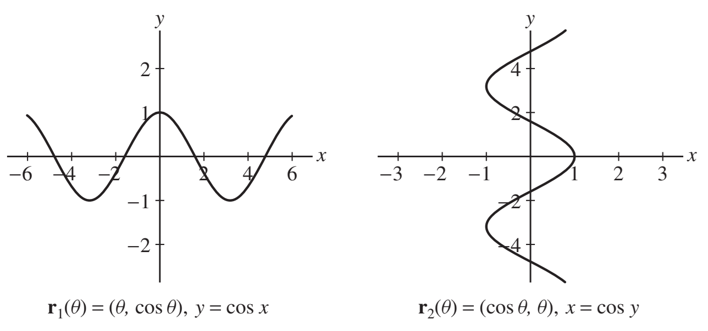
As seen in the graph, although \(\mathbf r_2(\theta)=\langle \cos\theta,\ \theta\rangle\) is a function of \(\theta\), \(y\) is not a function of \(x\).
- 63Chapter 3 · Source exercise 3Find a vector parametrization of the intersection of the surfaces \( x^2 + y^4 + 2z^3 = 6 \) and \( x = y^2 \) in \( \mathbb{R}^3 \).
Solution to exercise 63
We need to find a vector parametrization \(\mathbf r(t)=\langle x(t),y(t),z(t)\rangle\) for the intersection curve. Using \(t=y\) as a parameter, we have \(x=t^2\) and \(y=t\). We substitute in the equation of the surface \(x^2+y^4+2z^3=6\) and solve for \(z\) in terms of \(t\). This gives: \[ t^4+t^4+2z^3=6 \] \[ 2t^4+2z^3=6 \] \[ z^3=3-t^4 \quad \Rightarrow \quad z=\sqrt[3]{3-t^4} \] We obtain the following parametrization of the intersection curve: \[ \mathbf r(t)=\langle t^2,\ t,\ \sqrt[3]{3-t^4}\rangle. \]
- 64Chapter 3 · Source exercise 4Find a vector parametrization using trigonometric functions of the intersection of the plane \( x + y + z = 1 \) and the elliptical cylinder \( \left(\frac{y}{3}\right)^2 + \left(\frac{z}{8}\right)^2 = 1 \) in \( \mathbb{R}^3 \).
Solution to exercise 64
We need to find a vector parametrization \(\mathbf r(t)=\langle x(t),y(t),z(t)\rangle\) for the intersection curve. We parametrize the elliptical cylinder by: \[ x=x,\quad y=3\sin t,\quad z=8\cos t. \] We substitute in the equation of the plane \(x+y+z=1\) and solve for \(x\) in terms of \(t\). This gives: \[ x+3\sin t+8\cos t=1 \quad \Rightarrow \quad x=1-3\sin t-8\cos t. \] We obtain the following parametrization of the intersection curve: \[ \mathbf r(t)=\langle 1-3\sin t-8\cos t,\ 3\sin t,\ 8\cos t\rangle. \]
- 65Chapter 3 · Source exercise 5Find \( \mathbf{r}'(t) \) if \( \mathbf{r}(t) = \langle 1 - t, t^{-2}, \ln t \rangle \).
Solution to exercise 65
We use the Theorem on Componentwise Differentiation to compute the derivative \(\mathbf r'(t)\). We get \[ \mathbf r'(t)=\langle (1-t)',\ (t^{-2})',\ (\ln t)'\rangle =\langle -1,\ -2t^{-3},\ \tfrac1t\rangle. \]
- 66Chapter 3 · Source exercise 6Find \( \mathbf{r}'''(t) \) if \( \mathbf{r}(t) = \langle t^3, 4t^2, 7t \rangle \).
Solution to exercise 66
We use the Theorem on Componentwise Differentiation to find \(\mathbf r'(t)\): \[ \mathbf r'(t)=\langle (t^3)',\ (4t^2)',\ (7t)'\rangle =\langle 3t^2,\ 8t,\ 7\rangle. \] We differentiate \(\mathbf r'(t)\) componentwise to find \(\mathbf r''(t)\): \[ \mathbf r''(t)=\langle 6t,\ 8,\ 0\rangle. \] Differentiating \(\mathbf r''(t)\) componentwise gives \(\mathbf r'''(t)\): \[ \mathbf r'''(t)=\langle 6,\ 0,\ 0\rangle. \]
- 67Chapter 3 · Source exercise 7Find \( \mathbf{r}'(0) \) if \( \mathbf{r}(t) = \langle e^{2t}, e^{-4t^2}, e^{6t} \rangle \).
Solution to exercise 67
We differentiate \(\mathbf r(t)\) componentwise to find \(\mathbf r'(t)\): \[ \mathbf r'(t)=\langle (e^{2t})',\ (e^{-4t^2})',\ (e^{6t})'\rangle =\langle 2e^{2t},\ -8te^{-4t^2},\ 6e^{6t}\rangle. \] The derivative \(\mathbf r'(0)\) is obtained by setting \(t=0\) in \(\mathbf r'(t)\). This gives \[ \mathbf r'(0)=\langle 2e^{2\cdot0},\ -8\cdot0\,e^{-4\cdot0^2},\ 6e^{6\cdot0}\rangle =\langle 2,\ 0,\ 6\rangle. \]
- 68Chapter 3 · Source exercise 8Find \( \mathbf{r}''(-3) \) if \( \mathbf{r}(t) = \langle t^{-2}, (t+1)^{-1}, t^3 - t \rangle \).
Solution to exercise 68
We differentiate componentwise to find \(\mathbf r'(t)\): \[ \mathbf r'(t)=\langle -2t^{-3},\ -(t+1)^{-2},\ 3t^2-1\rangle \] We differentiate componentwise to find \(\mathbf r''(t)\) and evaluate at \(t=-3\): \[ \mathbf r''(t)=\langle 6t^{-4},\ 2(t+1)^{-3},\ 6t\rangle, \quad \Rightarrow \quad \mathbf r''(-3)=\langle \tfrac{2}{27},\ -\tfrac14,\ -18\rangle \]
- 69Chapter 3 · Source exercise 9Compute \[ \frac{d}{dt} \left( e^t \langle 1, t, t^2 \rangle \right). \]
Solution to exercise 69
Using the Product Rule for differentiation gives \[ \dfrac d{dt}e^t\langle 1,t,t^2\rangle = e^t\dfrac d{dt}\langle 1,t,t^2\rangle + (e^t)'\langle 1,t,t^2\rangle = e^t\langle 0,1,2t\rangle + e^t\langle 1,t,t^2\rangle \] \[ = e^t\big(\langle 0,1,2t\rangle + \langle 1,t,t^2\rangle\big) = e^t\langle 1,1+t,2t+t^2\rangle \]
- 70Chapter 3 · Source exercise 10Compute \[ \frac{d}{d\theta} \mathbf{r}(\cos \theta), \quad \text{where } \mathbf{r}(s) = \langle s, 2s, s^2 \rangle. \]
Solution to exercise 70
We use the Chain Rule to compute the derivative. That is, \[ \dfrac d{d\theta}\mathbf r(\cos\theta) =\left(\dfrac{d\mathbf r}{ds}\Big|_{s=\cos\theta}\right)\cdot\dfrac d{d\theta}(\cos\theta) = -\sin\theta\cdot\langle 1,2,2s\rangle\Big|_{s=\cos\theta} \] \[ = -\sin\theta\cdot\langle 1,2,2\cos\theta\rangle = \langle -\sin\theta,\ -2\sin\theta,\ -2\sin\theta\cos\theta\rangle \] \[ = -\langle \sin\theta,\ 2\sin\theta,\ \sin 2\theta\rangle \]
- 71Chapter 3 · Source exercise 11Compute \[ \frac{d}{dt} \left( 6\mathbf{r}_1(t) - 4\mathbf{r}_2(t) \right). \]
Solution to exercise 71
By linearity, the general answer is
\[ 6\mathbf r_1'(t)-4\mathbf r_2'(t). \]The following is the supplied optional evaluation at \(t=3\), using the data stated before Exercises 71–74.
Using Differentiation Rules we obtain: \[ \dfrac d{dt}\big(6\mathbf r_1(t)-4\mathbf r_2(t)\big)\Big|_{t=3} = 6\mathbf r_1'(3)-4\mathbf r_2'(3) = 6\cdot\langle 0,0,1\rangle-4\cdot\langle 0,2,4\rangle \] \[ = \langle 0,0,6\rangle-\langle 0,8,16\rangle = \langle 0,-8,-10\rangle \]
- 72Chapter 3 · Source exercise 12Compute \[ \frac{d}{dt} \left( e^t \mathbf{r}_2(t) \right). \]
Solution to exercise 72
Source clarification. The functions themselves are not defined in the question. The general product rule is the answer; the numerical evaluation at \(t=3\) uses the supplied solution data stated above these exercises.
Using the Product Rule gives: \[ \dfrac d{dt}\big(e^t\mathbf r_2(t)\big) = e^t\mathbf r_2'(t)+(e^t)'\mathbf r_2(t) = e^t\big(\mathbf r_2'(t)+\mathbf r_2(t)\big) \] Setting \(t=3\) we get: \[ \dfrac d{dt}\big(e^t\mathbf r_2(t)\big)\Big|_{t=3} = e^3\big(\mathbf r_2'(3)+\mathbf r_2(3)\big) = e^3\big(\langle 0,2,4\rangle+\langle 1,1,0\rangle\big) = e^3\langle 1,3,4\rangle \]
- 73Chapter 3 · Source exercise 13Compute \[ \frac{d}{dt} \left( \mathbf{r}_1(t) \cdot \mathbf{r}_2(t) \right). \]
Solution to exercise 73
Source clarification. The functions themselves are not defined in the question. The general product rule is the answer; the numerical evaluation at \(t=3\) uses the supplied solution data stated above these exercises.
Using Product Rule for Dot Products we obtain: \[ \dfrac d{dt}\,\mathbf r_1(t)\cdot\mathbf r_2(t) = \mathbf r_1(t)\cdot\mathbf r_2'(t)+\mathbf r_1'(t)\cdot\mathbf r_2(t) \] Setting \(t=3\) gives: \[ \dfrac d{dt}\,\mathbf r_1(t)\cdot\mathbf r_2(t)\Big|_{t=3} = \mathbf r_1(3)\cdot\mathbf r_2'(3)+\mathbf r_1'(3)\cdot\mathbf r_2(3) = \langle 1,1,0\rangle\cdot\langle 0,2,4\rangle + \langle 0,0,1\rangle\cdot\langle 1,1,0\rangle = 2+0=2 \]
- 74Chapter 3 · Source exercise 14Compute \[ \frac{d}{dt} \left( \mathbf{r}_1(t) \times \mathbf{r}_2(t) \right). \]
Solution to exercise 74
Source clarification. The functions themselves are not defined in the question. The general product rule is the answer; the numerical evaluation at \(t=3\) uses the supplied solution data stated above these exercises.
We use the Product Rule for Cross Product to write: \[ \dfrac d{dt}\,\mathbf r_1(t)\times \mathbf r_2(t) = \mathbf r_1(t)\times \mathbf r_2'(t)+\mathbf r_1'(t)\times \mathbf r_2(t) \] Setting \(t=3\) we obtain: \[ \dfrac d{dt}\,\mathbf r_1(t)\times \mathbf r_2(t)\Big|_{t=3} = \mathbf r_1(3)\times \mathbf r_2'(3)+\mathbf r_1'(3)\times \mathbf r_2(3) = \langle 1,1,0\rangle\times \langle 0,2,4\rangle+\langle 0,0,1\rangle\times \langle 1,1,0\rangle \] \[ = \begin{vmatrix} \mathbf i & \mathbf j & \mathbf k\\ 1 & 1 & 0\\ 0 & 2 & 4 \end{vmatrix} + \begin{vmatrix} \mathbf i & \mathbf j & \mathbf k\\ 0 & 0 & 1\\ 1 & 1 & 0 \end{vmatrix} = (4\mathbf i-4\mathbf j+2\mathbf k)+(-\mathbf i+\mathbf j) \] \[ = 3\mathbf i-3\mathbf j+2\mathbf k=\langle 3,-3,2\rangle \]
Integration & initial conditions
75–80- 75Chapter 3 · Source exercise 15Calculate \[ \int_0^3 \langle 4t + 3, t^2, -4t^3 \rangle \, dt. \]
Solution to exercise 75
By the definition of vector-valued integration, we have \[ \int_{0}^{3}\langle 4t+3,\ t^2,\ -4t^3\rangle\,dt =\langle \int_{0}^{3}(4t+3)\,dt,\ \int_{0}^{3}t^2\,dt,\ \int_{0}^{3}-4t^3\,dt\rangle \tag{1}\label{exam1-equation-11} \] We compute the integrals on the right-hand side: \[ \int_{0}^{3}(4t+3)\,dt = 2t^2+3t\Big|_{0}^{3} = 2\cdot 9+3\cdot 3-0=27 \] \[ \int_{0}^{3}t^2\,dt =\frac{t^3}{3}\Big|_{0}^{3} =\frac{3^3}{3}=9 \] \[ \int_{0}^{3}-4t^3\,dt =-t^4\Big|_{0}^{3} =-3^4=-81 \] Substituting in (1) gives the following integral: \[ \int_{0}^{3}\langle 4t+3,\ t^2,\ -4t^3\rangle\,dt =\langle 27,9,-81\rangle \]
- 76Chapter 3 · Source exercise 16Calculate \[ \int_0^{\pi} \langle \sin \theta, \theta, \cos 2\theta \rangle \, d\theta. \]
Solution to exercise 76
By the definition of vector-valued integration, we have \[ \int_{0}^{\pi}\langle \sin\theta,\ \theta,\ \cos 2\theta\rangle\,d\theta =\langle \int_{0}^{\pi}\sin\theta\,d\theta,\ \int_{0}^{\pi}\theta\,d\theta,\ \int_{0}^{\pi}\cos 2\theta\,d\theta\rangle \tag{1}\label{exam1-equation-12} \] We compute the integrals on the right hand-side: \[ \int_{0}^{\pi}\sin\theta\,d\theta =-\cos\theta\Big|_{0}^{\pi} =-(\cos\pi-\cos 0) =-(-1-1)=2 \] \[ \int_{0}^{\pi}\theta\,d\theta =\frac12\theta^2\Big|_{0}^{\pi} =\frac{\pi^2}{2} \] \[ \int_{0}^{\pi}\cos 2\theta\,d\theta =\frac12\sin 2\theta\Big|_{0}^{\pi} =\frac12(\sin 2\pi-\sin 0)=0 \] Substituting in (1) gives the following integral: \[ \int_{0}^{\pi}\langle \sin\theta,\ \theta,\ \cos 2\theta\rangle\,d\theta =\langle 2,\ \frac{\pi^2}{2},\ 0\rangle \]
- 77Chapter 3 · Source exercise 17A particle located at \( (1,1,0) \) at time \( t=0 \) follows a path whose velocity vector is \( \mathbf{v}(t) = \langle 1, t, 2t^2 \rangle \). Find the particle’s location at \( t=2 \).
Solution to exercise 77
We first find the path \(\mathbf r(t)\) by integrating the velocity vector \(\mathbf v(t)\): \[ \mathbf r(t)=\int \langle 1,t,2t^2\rangle\,dt =\langle \int 1\,dt,\ \int t\,dt,\ \int 2t^2\,dt\rangle =\langle t+c_1,\ \tfrac12 t^2+c_2,\ \tfrac23 t^3+c_3\rangle \] Denoting by \(\mathbf c=\langle c_1,c_2,c_3\rangle\) the constant vector, we obtain: \[ \mathbf r(t)=\langle t,\ \tfrac12 t^2,\ \tfrac23 t^3\rangle+\mathbf c \tag{1}\label{exam1-equation-13} \] To find the constant vector \(\mathbf c\), we use the given information on the initial position of the particle. At time \(t=0\) it is at the point \((1,1,0)\). That is, by (1): \[ \mathbf r(0)=\langle 0,0,0\rangle+\mathbf c=\langle 1,1,0\rangle \] or, \[ \mathbf c=\langle 1,1,0\rangle \] We substitute in (1) to obtain: \[ \mathbf r(t)=\langle t,\ \tfrac12 t^2,\ \tfrac23 t^3\rangle+\langle 1,1,0\rangle =\langle t+1,\ \tfrac12 t^2+1,\ \tfrac23 t^3\rangle \] Finally, we substitute \(t=2\) to obtain the particle's location at \(t=2\): \[ \mathbf r(2)=\langle 2+1,\ \tfrac12\cdot 2^2+1,\ \tfrac23\cdot 2^3\rangle =\langle 3,3,\tfrac{16}{3}\rangle \] At time \(t=2\) the particle is located at the point \[ \left(3,3,\tfrac{16}{3}\right) \]
- 78Chapter 3 · Source exercise 18Find the vector-valued function \( \mathbf{r}(t) = \langle x(t), y(t) \rangle \) in \( \mathbb{R}^2 \) satisfying \( \mathbf{r}'(t) = -\mathbf{r}(t) \) with \( \mathbf{r}(0) = \langle 1,2 \rangle \).
Solution to exercise 78
We rewrite the differential equation by components as: \[ \langle x'(t),y'(t)\rangle=-\langle x(t),y(t)\rangle \quad \text{or} \quad \langle x'(t),y'(t)\rangle=\langle -x(t),-y(t)\rangle \] Equating corresponding components, we obtain: \[ x'(t)=-x(t) \qquad y'(t)=-y(t) \quad \Rightarrow \quad \frac{x'(t)}{x(t)}=-1,\ \ \frac{y'(t)}{y(t)}=-1 \] By integration we get \(\ln(x(t))=-t+A\), \(\ln(y(t))=-t+B\) or: \[ x(t)=ae^{-t} \qquad \text{where} \qquad y(t)=be^{-t} \qquad a=e^{A},\ \ b=e^{B} \] By the given information \(\mathbf r(0)=\langle 1,2\rangle\). Therefore, \[ x(0)=ae^{-0}=a=1 \qquad y(0)=be^{-0}=b=2 \quad \Rightarrow \quad a=1,\ b=2 \] We obtain the following vector: \[ \mathbf r(t)=\langle x(t),y(t)\rangle =\langle ae^{-t},be^{-t}\rangle =\langle e^{-t},2e^{-t}\rangle. \]
- 79Chapter 3 · Source exercise 19Find \( \mathbf{r}(t) \), assuming \[ \mathbf{r}''(t) = \langle 4 - 16t, 12t^2 - t \rangle, \] \( \mathbf{r}'(0) = \langle 1,0 \rangle \), and \( \mathbf{r}(0) = \langle 0,1 \rangle \).
Solution to exercise 79
Using componentwise integration we get: \[ \mathbf r'(t)=\int \langle 4-16t,\ 12t^2-t\rangle\,dt =\langle \int(4-16t)\,dt,\ \int(12t^2-t)\,dt\rangle =\langle 4t-8t^2,\ 4t^3-\tfrac{t^2}{2}\rangle+\mathbf c_1 \] Then using the initial condition \(\mathbf r'(0)=\langle 1,0\rangle\) we get: \[ \mathbf r'(0)=\langle 1,0\rangle=\mathbf c_1 \] so then \[ \mathbf r'(t)=\langle 4t-8t^2,\ 4t^3-\tfrac{t^2}{2}\rangle+\langle 1,0\rangle =\langle 4t-8t^2+1,\ 4t^3-\tfrac{t^2}{2}\rangle \] Then integrating componentwise once more we get: \[ \mathbf r(t)=\int \langle 4t-8t^2+1,\ 4t^3-\tfrac{t^2}{2}\rangle\,dt =\langle \int(4t-8t^2+1)\,dt,\ \int(4t^3-\tfrac{t^2}{2})\,dt\rangle \] \[ =\langle 2t^2-\tfrac{8}{3}t^3+t,\ t^4-\tfrac{t^3}{6}\rangle+\mathbf c_2 \] Using the initial condition \(\mathbf r(0)=\langle 0,1\rangle\) we have: \[ \mathbf r(0)=\langle 0,1\rangle=\mathbf c_2 \] Therefore, \[ \mathbf r(t) =\langle 2t^2-\tfrac{8}{3}t^3+t,\ t^4-\tfrac{t^3}{6}\rangle+\langle 0,1\rangle =\langle 2t^2-\tfrac{8}{3}t^3+t,\ t^4-\tfrac{t^3}{6}+1\rangle \]
- 80Chapter 3 · Source exercise 20Solve \[ \mathbf{r}''(t) = \langle t^2 - 1, t + 1, t^3 \rangle \] subject to \( \mathbf{r}(0) = \langle 1,0,0 \rangle \) and \( \mathbf{r}'(0) = \langle -1,1,0 \rangle \).
Solution to exercise 80
Integrate componentwise and apply the stated initial conditions at \(t=0\).
\[ \mathbf r'(t)=\langle t^3/3-t,\ t^2/2+t,\ t^4/4\rangle+\mathbf c_1,\qquad\mathbf c_1=\langle-1,1,0\rangle. \]\[ \mathbf r(t)=\langle t^4/12-t^2/2-t,\ t^3/6+t^2/2+t,\ t^5/20\rangle+\mathbf c_2,\qquad\mathbf c_2=\langle1,0,0\rangle. \]\[ \boxed{\mathbf r(t)=\langle1-t-t^2/2+t^4/12,\ t+t^2/2+t^3/6,\ t^5/20\rangle}. \]Source clarification. The supplied solution applied the initial conditions at 1 even though the problem specifies 0. The constants above satisfy both stated conditions.
Arc length, motion & tangents
81–88- 81Chapter 3 · Source exercise 21Compute the length of the path \( \mathbf{r}(t) = \langle \sin 2t, \cos 2t, 3t - 1 \rangle \) for \( 1 \le t \le 3 \).
Solution to exercise 81
We use the formula for the arc length: \[ L=\int_{1}^{3}\lVert \mathbf r'(t)\rVert\,dt \tag{1}\label{exam1-equation-14} \] We compute the derivative vector \(\mathbf r'(t)\) and its length: \[ \mathbf r'(t)=\langle 2\cos 2t,\ -2\sin 2t,\ 3\rangle \] \[ \lVert \mathbf r'(t)\rVert =\sqrt{(2\cos 2t)^2+(-2\sin 2t)^2+3^2} =\sqrt{4\cos^2 2t+4\sin^2 2t+9} \] \[ =\sqrt{4(\cos^2 2t+\sin^2 2t)+9} =\sqrt{4\cdot 1+9} =\sqrt{13} \] We substitute in (1) and compute the integral to obtain the following length: \[ L=\int_{1}^{3}\sqrt{13}\,dt =\sqrt{13}\,t\Big|_{1}^{3} =2\sqrt{13}. \]
- 82Chapter 3 · Source exercise 22Find an arc length parametrization of a helix of height 20 cm that makes four full rotations over a circle of radius 5 cm.
Solution to exercise 82
To complete the requested arc length parametrization, let \(c=\sqrt{1+4\pi^2}\). Then \(s=ct\) and \(t=s/c\).
\[ \boxed{\mathbf R(s)=\left\langle5\cos\frac{2\pi s}{5c},\ 5\sin\frac{2\pi s}{5c},\ \frac{s}{c}\right\rangle},\qquad0\le s\le20c. \]This curve has unit speed, height 20 cm, and four complete rotations. The supplied derivation of the original parametrization and length follows.
Since the radius is \(5\) cm and the height is \(20\) cm, the helix is traced by a parametrization of the form: \[ \mathbf r(t)=\langle 5\cos(at),\ 5\sin(at),\ t\rangle, \qquad 0\le t\le 20 \] Since the helix makes exactly \(4\) full rotations, we have: \[ a\cdot 20=4\cdot 2\pi \quad \Rightarrow \quad a=\frac{2\pi}{5} \] The parametrization of the helix is, thus: \[ \mathbf r(t)=\langle 5\cos\frac{2\pi t}{5},\ 5\sin\frac{2\pi t}{5},\ t\rangle, \qquad 0\le t\le 20 \] The helix is shown in the following figure:
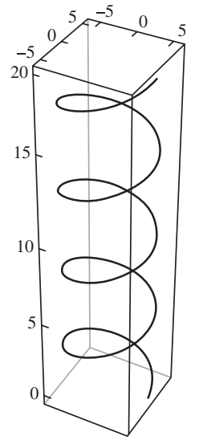
To find the length of the helix, we use the arc length formula: \[ L=\int_{0}^{20}\lVert \mathbf r'(t)\rVert\,dt \tag{1}\label{exam1-equation-15} \] We find \(\mathbf r'(t)\) and its length: \[ \mathbf r'(t)=\langle -5\cdot \tfrac{2\pi}{5}\sin\frac{2\pi t}{5},\ 5\cdot \tfrac{2\pi}{5}\cos\frac{2\pi t}{5},\ 1\rangle =\langle -2\pi\sin\frac{2\pi t}{5},\ 2\pi\cos\frac{2\pi t}{5},\ 1\rangle \] \[ \lVert \mathbf r'(t)\rVert =\sqrt{4\pi^2\sin^2\frac{2\pi t}{5}+4\pi^2\cos^2\frac{2\pi t}{5}+1} =\sqrt{4\pi^2\left(\sin^2\frac{2\pi t}{5}+\cos^2\frac{2\pi t}{5}\right)+1} =\sqrt{1+4\pi^2} \] Substituting in (1) we get: \[ L=\int_{0}^{20}\sqrt{1+4\pi^2}\,dt =20\sqrt{1+4\pi^2}\approx 127.2 \]
- 83Chapter 3 · Source exercise 23Find the minimum speed of a particle with trajectory \( \mathbf{r}(t) = \langle t, e^{t-3}, e^{4-t} \rangle \).
Solution to exercise 83
The speed of the particle is the following function: \[ v(t)=\lVert \mathbf r'(t)\rVert \] We compute the derivative vector \(\mathbf r'(t)\) and its length: \[ \mathbf r'(t)=\frac{d}{dt}\langle t,e^{t-3},e^{4-t}\rangle =\langle 1,e^{t-3},-e^{4-t}\rangle \] \[ \lVert \mathbf r'(t)\rVert =\sqrt{1^2+(e^{t-3})^2+(-e^{4-t})^2} =\sqrt{1+e^{2t-6}+e^{8-2t}} \] Therefore: \[ v(t)=\sqrt{1+e^{2t-6}+e^{8-2t}} \] Since the function \(f(x)=x^2\) is increasing for \(x>0\), \(v(t)\) and \(v^2(t)\) assume their minimum values at the same value of \(t\). Thus, we minimize the function: \[ F(t)=v^2(t)=1+e^{2t-6}+e^{8-2t} \] We compute the critical point by solving \(F'(t)=0\). This gives: \[ F'(t)=2e^{2t-6}-2e^{8-2t}=0 \] \[ e^{2t-6}=e^{8-2t} \] Therefore: \[ 2t-6=8-2t \] \[ 4t=14 \quad \Rightarrow \quad t=\frac72 \] We compute the second derivative and substitute \(t=\frac72\): \[ F''(t)=4e^{2t-6}+4e^{8-2t} \] \[ F''\!\left(\frac72\right)=4e^{2\cdot(7/2)-6}+4e^{8-2\cdot(7/2)} =4e+4e=8e>0 \] The Second Derivative Test implies that \(F(t)\), hence \(v(t)\) as well, have a minimum at \(t=\frac72\). The minimum speed is: \[ v\!\left(\frac72\right) =\sqrt{1+e^{2\cdot(7/2)-6}+e^{8-2\cdot(7/2)}} =\sqrt{1+2e} \]
- 84Chapter 3 · Source exercise 24A specially trained mouse runs counterclockwise in a circle of radius 0.6 m with speed 0.3 m/s on the floor of an elevator that ascends at 12 m/s. Find the mouse’s acceleration vector as a function of time.
Solution to exercise 84
The angular speed is \(\omega=v/R=0.3/0.6=0.5\ \mathrm{rad/s}\). Choose the circle’s center as the horizontal origin and initial angle \(phi_0\).
\[ \mathbf r(t)=\langle0.6\cos(t/2+\phi_0),\ 0.6\sin(t/2+\phi_0),\ 12t+z_0\rangle. \]\[ \boxed{\mathbf a(t)=\langle-0.15\cos(t/2+\phi_0),\ -0.15\sin(t/2+\phi_0),\ 0\rangle\ \mathrm{m/s^2}}. \]For an initial point on the positive \(x\)-axis, set \(phi_0=0\). The elevator moves at constant velocity and contributes zero acceleration.
Source clarification. The supplied solution used radius 2, horizontal speed 1, and elevator speed 40; the Chapter 3 text also places the mouse at (2,0,0), outside a radius-0.6 circle. This solution uses the stated radius 0.6 m and speed 0.3 m/s, leaving the unspecified initial phase arbitrary.
- 85Chapter 3 · Source exercise 25During the interval \([0.5,1.5]\), the path of an unmanned spy plane is described by \[\mathbf r(t)=\langle-100/t^2,\ 7-t,\ 40-t^2\rangle.\] A laser is fired from the plane in a tangential direction toward the \(yz\)-plane at \(t=1\). Which point in the \(yz\)-plane does the laser hit?
Solution to exercise 85
Source clarification. The Chapter 3 file uses \(-100/t^2\), matching its supplied solution. The earlier HTML uses \(-100t^2\). For that alternate trajectory, \(\mathbf r'(1)=\langle-200,-1,-2\rangle\); aiming toward the \(yz\)-plane reverses the tangent direction, giving the hit \((0,13/2,40)\).
Notice first that by differentiating we get the tangent vector: \[ \mathbf r'(t)=\langle \frac{200}{t^3},\ -1,\ -2t\rangle, \quad \Rightarrow \quad \mathbf r'(1)=\langle 200,\ -1,\ -2\rangle \] and the tangent line to the path would be: \[ \ell(s)=\mathbf r(1)+s\mathbf r'(1) =\langle -100,\ 6,\ 39\rangle+s\langle 200,\ -1,\ -2\rangle =\langle -100+200s,\ 6-s,\ 39-2s\rangle \] If the laser is fired in the tangential direction toward the \(yz\)-plane means that the \(x\)-coordinate will be zero – this is when \(s=\frac12\). Therefore, \[ \ell\!\left(\frac12\right)=\langle 0,\ \frac{11}{2},\ 38\rangle \] Hence, the laser beam will hit the point \((0,\frac{11}{2},38)\).
- 86Chapter 3 · Source exercise 26A force \( \mathbf{F} = \langle 12t + 4, 8 - 24t \rangle \) (newtons) acts on a 2-kg mass. Find the position at \( t=2 \) seconds if the mass is at \( (4,6) \) at \( t=0 \) with initial velocity \( (2,3) \).
Solution to exercise 86
Recall the formula \(\mathbf F=m\mathbf a\) then using \(\mathbf F=\langle 12t+4,\ 8-24t\rangle\) and \(m=2\) we get: \[ \langle 12t+4,\ 8-24t\rangle=2\mathbf a, \quad \Rightarrow \quad \mathbf a(t)=\mathbf r''(t)=\langle 6t+2,\ 4-12t\rangle \] Then using componentwise integration, \[ \mathbf v(t)=\int \mathbf a(t)\,dt =\int \langle 6t+2,\ 4-12t\rangle\,dt =\langle 3t^2+2t,\ 4t-6t^2\rangle+\mathbf c_1 \] Using the initial condition \(\mathbf v_0=\mathbf v(0)=\langle 2,3\rangle\), we get: \[ \mathbf v(0)=\langle 2,3\rangle=\mathbf c_1 \] and therefore, \[ \mathbf v(t)=\langle 3t^2+2t+2,\ 4t-6t^2+3\rangle \] Using componentwise integration once more, \[ \mathbf r(t)=\int \mathbf v(t)\,dt =\int \langle 3t^2+2t+2,\ 4t-6t^2+3\rangle\,dt =\langle t^3+t^2+2t,\ 2t^2-2t^3+3t\rangle+\mathbf c_2 \] Using the initial condition \(\mathbf r(0)=\langle 4,6\rangle\) we get: \[ \mathbf r(0)=\langle 4,6\rangle=\mathbf c_2 \] Therefore, \[ \mathbf r(t)=\langle t^3+t^2+2t+4,\ 2t^2-2t^3+3t+6\rangle \] and the position of the mass at \(t=2\) is \(\mathbf r(2)=\langle 20,4\rangle\).
- 87Chapter 3 · Source exercise 27Find the unit tangent vector to \( \mathbf{r}(t) = \langle \sin t, t, \cos t \rangle \) at \( t=\pi \).
Solution to exercise 87
The unit tangent vector at \(t=\pi\) is \[ \mathbf T(\pi)=\frac{\mathbf r'(\pi)}{\lVert \mathbf r'(\pi)\rVert} \] We differentiate \(\mathbf r(t)\) componentwise to obtain: \[ \mathbf r'(t)=\langle \cos t,\ 1,\ -\sin t\rangle \] Therefore, \[ \mathbf r'(\pi)=\langle \cos\pi,\ 1,\ -\sin\pi\rangle=\langle -1,\ 1,\ 0\rangle \] We compute the length of \(\mathbf r'(\pi)\): \[ \lVert \mathbf r'(\pi)\rVert=\sqrt{(-1)^2+1^2+0^2}=\sqrt{2} \] Substituting in (1) gives: \[ \mathbf T(\pi)=\langle -\tfrac{1}{\sqrt2},\ \tfrac{1}{\sqrt2},\ 0\rangle \]
- 88Chapter 3 · Source exercise 28Find the unit tangent vector to \( \mathbf{r}(t) = \langle t^2, \tan^{-1} t, t \rangle \) at \( t=1 \).
Solution to exercise 88
The unit tangent vector at \(t=1\) is the following vector: \[ \mathbf T(1)=\frac{\mathbf r'(1)}{\lVert \mathbf r'(1)\rVert} \tag{1}\label{exam1-equation-16} \] We differentiate \(\mathbf r(t)=\langle t^2,\ \tan^{-1} t,\ t\rangle\) componentwise: \[ \mathbf r'(t)=\langle 2t,\ \frac{1}{1+t^2},\ 1\rangle \] Setting \(t=1\), we get: \[ \mathbf r'(1)=\langle 2\cdot 1,\ \frac{1}{1+1^2},\ 1\rangle=\langle 2,\ \tfrac12,\ 1\rangle \] \[ \lVert \mathbf r'(1)\rVert =\sqrt{2^2+\left(\tfrac12\right)^2+1^2} =\frac{\sqrt{21}}{2} \] Substituting in (1) we obtain the following unit tangent vector: \[ \mathbf T(1)=\frac{2}{\sqrt{21}}\langle 2,\ \tfrac12,\ 1\rangle =\langle \tfrac{4}{\sqrt{21}},\ \tfrac{1}{\sqrt{21}},\ \tfrac{2}{\sqrt{21}}\rangle \]
Supplemental · Chapter 2
Coordinate Systems
These seven exercises were commented out in the original Chapter 2 file and omitted from its active review. They are preserved here as additional practice; confirm their exam relevance with your instructor. They correspond to Chapter 2 source exercises 61–67.
- 89Supplemental · Chapter 2 source exercise 61Convert \((x,y,z)=(3,4,-1)\) from rectangular to cylindrical and spherical coordinates.
Solution to supplemental exercise 89
In cylindrical coordinates \((r,\theta,z)\) we have \[ r=\sqrt{x^2+y^2},\qquad \tan\theta=\frac{y}{x} \] Therefore, \(r=\sqrt{3^2+4^2}=5\) and \(\tan\theta=\frac43\). The projection of the point \((3,4,-1)\) onto the \(xy\)-plane is the point \((3,4)\), in the first quadrant. Therefore the corresponding value of \(\theta\) is \(\tan^{-1}\frac43\approx 0.93\) rad. The corresponding coordinates in cylindrical coordinates are, thus, \[ (r,\theta,z)=\left(5,\tan^{-1}\frac43,-1\right) \] The spherical coordinates \((\rho,\theta,\phi)\) satisfy \[ \rho=\sqrt{x^2+y^2+z^2},\qquad \tan\theta=\frac{y}{x},\qquad \cos\phi=\frac{z}{\rho} \] Therefore, \[ \rho=\sqrt{3^2+4^2+(-1)^2}=\sqrt{26} \] \[ \tan\theta=\frac43 \] \[ \cos\phi=\frac{-1}{\sqrt{26}} \] The angle \(\theta\) is the same as in the cylindrical coordinates, that is, \(\theta=\tan^{-1}\frac43\). The angle \(\phi\) is the solution of \(\cos\phi=-\frac{1}{\sqrt{26}}\) that satisfies \(0\le \phi\le \pi\), that is, \(\phi=\cos^{-1}\!\left(-\frac{1}{\sqrt{26}}\right)\approx 1.77\) rad. The spherical coordinates are, thus, \[ (\rho,\theta,\phi)=\left(\sqrt{26},\tan^{-1}\frac43,\cos^{-1}\!\left(-\frac{1}{\sqrt{26}}\right)\right). \]
- 90Supplemental · Chapter 2 source exercise 62Convert \((r,\theta,z)=\left(3,\frac{\pi}{6},4\right)\) from cylindrical to spherical coordinates.
Solution to supplemental exercise 90
By the given information, \(r=3\), \(\theta=\frac{\pi}{6}\) and \(z=4\). We must determine the spherical coordinates \((\rho,\theta,\phi)\). The angle \(\theta\) is the same in cylindrical coordinates and in spherical coordinates. To find \(\rho\) we use the relation \[ \rho=\sqrt{x^2+y^2+z^2}=\sqrt{r^2+z^2}. \] This gives \[ \rho=\sqrt{r^2+z^2}=\sqrt{3^2+4^2}=5 \] The angle \(\phi\) satisfies \(\cos\phi=\frac{z}{\rho}=\frac45=0.8\) and \(0\le \phi\le \pi\). Therefore, \(\phi=\cos^{-1}0.8\). In spherical coordinates, we obtain the following description: \[ (\rho,\theta,\phi)=\left(5,\frac{\pi}{6},\cos^{-1}0.8\right). \]
- 91Supplemental · Chapter 2 source exercise 63Convert the point \((\rho,\theta,\phi)=\left(3,\frac{\pi}{6},\frac{\pi}{3}\right)\) from spherical to cylindrical coordinates.
Solution to supplemental exercise 91
By the given information, \(\rho=3\), \(\theta=\frac{\pi}{6}\), and \(\phi=\frac{\pi}{3}\). We must determine the cylindrical coordinates \((r,\theta,z)\). The angle \(\theta\) is the same in spherical coordinates. We find \(z\) using the relation \(\cos\phi=\frac{z}{\rho}\), or \(z=\rho\cos\phi\). We obtain \[ z=\rho\cos\phi=3\cos\frac{\pi}{3}=3\cdot \frac12=\frac32 \] We find \(r\) using the relation \(\rho^2=x^2+y^2+z^2=r^2+z^2\), or \(r=\sqrt{\rho^2-z^2}\), we get \[ r=\sqrt{3^2-\left(\frac32\right)^2}=\sqrt{\frac{27}{4}}=\frac{3\sqrt3}{2} \] Hence, in cylindrical coordinates we obtain the following description: \[ (r,\theta,z)=\left(\frac{3\sqrt3}{2},\frac{\pi}{6},\frac32\right). \]
- 92Supplemental · Chapter 2 source exercise 64Describe the set of all points \(P=(x,y,z)\) satisfying \(x^2+y^2\le 4\) in both cylindrical and spherical coordinates.
Solution to supplemental exercise 92
In cylindrical coordinates we have \(x^2+y^2=r^2\), hence the inequality \(x^2+y^2\le 4\) becomes \[ r^2\le 4 \] or \[ r\le 2 \] That is, \[ \{(r,\theta,z): r\le 2,\ 0\le \theta\le 2\pi\} \] This is a solid cylinder of radius \(2\). In spherical coordinates we have \(x^2+y^2+z^2=\rho^2\) and \(z=\rho\cos\phi\). Therefore, \[ x^2+y^2=\rho^2-z^2=\rho^2-\rho^2\cos^2\phi=\rho^2(1-\cos^2\phi)=\rho^2\sin^2\phi \] The inequality \(x^2+y^2\le 4\) in spherical coordinates is, thus, \[ \rho^2\sin^2\phi\le 4 \tag{1}\label{exam1-equation-17} \] Notice that since \(0\le \phi\le \pi\), we have \(\sin\phi\ge 0\). Also \(\rho\ge 0\), therefore \(\rho\sin\phi\ge 0\), hence inequality (1) is equivalent to \[ \rho\sin\phi\le 2 \] We obtain the following description in spherical coordinates: \[ \{(\rho,\theta,\phi): \rho\sin\phi\le 2,\ 0\le \theta\le 2\pi,\ 0\le \phi\le \pi\} \] The coordinate ranges also require \(r\ge0\), \(\rho\ge0\), \(z\in\mathbb R\), \(0\le\theta<2\pi\), and \(0\le\phi\le\pi\).
- 93Supplemental · Chapter 2 source exercise 65Sketch the graph of the cylindrical equation \(z=2r\cos\theta\) and write the equation in rectangular coordinates.
Solution to supplemental exercise 93
To obtain the equation in rectangular coordinates, we substitute \(x=r\cos\theta\) in the equation \[ z=2r\cos\theta \] This is the equation of a plane normal to the \(xz\)-plane, whose intersection with the \(xz\)-plane is the line \(z=2x\). The rectangular equation is \(z=2x\). Sketch the \(y\)-axis together with the line \(z=2x\) in the \(xz\)-plane, then extend that line parallel to the \(y\)-axis. The original source contains an unprovided figure placeholder.
- 94Supplemental · Chapter 2 source exercise 66Write the surface \(x^2+y^2-z^2=2(x+y)\) as an equation \(r=f(\theta,z)\) in cylindrical coordinates.
Solution to supplemental exercise 94
In cylindrical coordinates, we have \[ r^2=x^2+y^2,\qquad x=r\cos\theta,\qquad y=r\sin\theta \] Substituting in the equation of the surface \(x^2+y^2-z^2=2(x+y)\) gives: \[ r^2-z^2=2(r\cos\theta+r\sin\theta) \] \[ r^2=z^2+2r(\cos\theta+\sin\theta) \] \[ r^2-2r(\cos\theta+\sin\theta)-z^2=0 \] We solve the quadratic equation for \(r\): \[ r=(\cos\theta+\sin\theta)\pm \sqrt{(\cos\theta+\sin\theta)^2+z^2} \] \[ =(\cos\theta+\sin\theta)\pm \sqrt{\cos^2\theta+2\cos\theta\sin\theta+\sin^2\theta+z^2} \] We use the identities \(\cos^2\theta+\sin^2\theta=1\) and \(2\cos\theta\sin\theta=\sin 2\theta\) to obtain the following function: \[ r=\cos\theta+\sin\theta\pm \sqrt{1+\sin 2\theta+z^2} \] Since \(r\ge0\), the single-valued choice is \(r=\cos\theta+\sin\theta+\sqrt{1+\sin2\theta+z^2}\). The minus branch is negative except where it is zero; points with \(r=0\) and \(z=0\) are already included in the surface through another angular representation.
- 95Supplemental · Chapter 2 source exercise 67Show that the cylindrical equation \[ r^2(1-2\sin^2\theta)+z^2=1 \] is a hyperboloid of one sheet.
Solution to supplemental exercise 95
Substitute \(x=r\cos\theta\) and \(y=r\sin\theta\): \(r^2-2(r\sin\theta)^2+z^2=x^2-y^2+z^2=1\). This is a hyperboloid of one sheet with axis along \(y\).
About the sources and corrections
This guide preserves the 88 active problems and their supplied solutions from the study-guide folder. Obvious arithmetic errors and solutions inconsistent with the stated data have been corrected. Material differences between the HTML and chapter files are explained beside the affected solutions; alternate problem versions are retained in those notes. The folder’s Chapter 2 wording is used for Exercise 19, and the chapter-file wording is used for Exercises 32, 43, and 85.
All referenced graphics were found with exact filenames. The inactive source contains an unprovided figure placeholder for supplemental Exercise 93; sketch instructions are supplied there. Exercises 71–74 do not include full definitions of the functions, so the general rules and the numerical data used in the supplied solutions are explicitly distinguished.
Math is rendered by MathJax, loaded from a CDN. An internet connection is needed for mathematical rendering. All image paths point to the adjacent images/ folder.